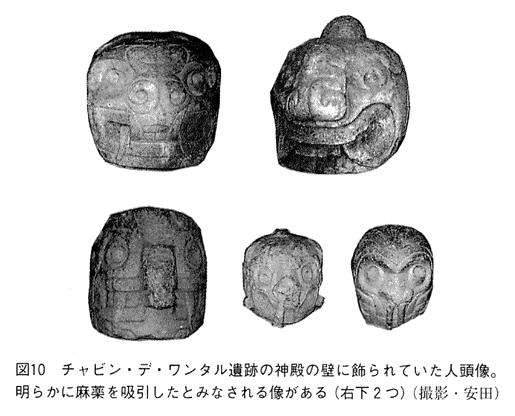
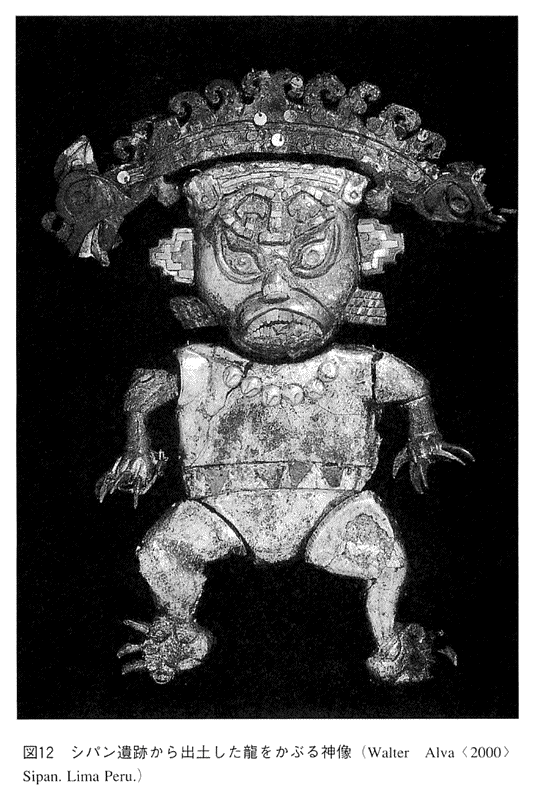
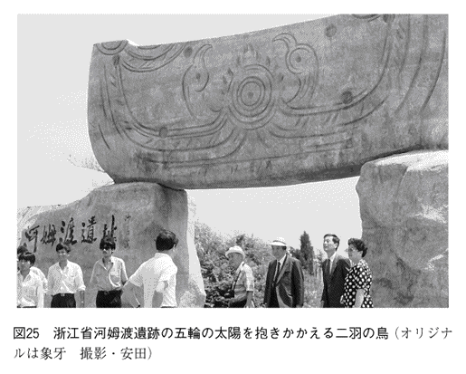
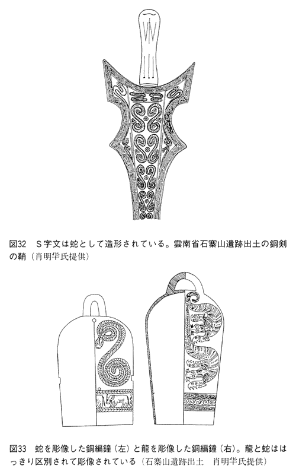

| 龍の文明・太陽の文明 (PHP新書) | |
| 安田 喜憲 | |
| PHP研究所 (2001) | |

龍の文明・太陽の文明
安田喜憲
はじめに
中国には、北の畑作牧畜・南の稲作漁撈、北の龍・南の鳳凰、北の馬・南の牛という明白な南北構造がみられる。これは南船北馬と古くからいわれてきたこととも通じる。その南北構造はたんに交通や経済の問題にとどまらず、中国文明とは何かを根本的に問い直すきわめて重大なことがらを内包している。
本書は龍と鳳凰（太陽）をめぐる中国人の世界観・宇宙観に焦点をあてる。その南北構造を中国文明史の中に位置づけることによって、中国文明とは何であったかを問い直す。
そして、この龍と鳳凰の南北構造からみえてきたもう一つの重要なことがらは、日本民族のルーツとその未来さえ、この中国の南北構造の中で見直す必要が出てきたということである。
龍の文明・太陽の文明 目次
１......龍の起源を求めて
２......龍と王権
１......太陽の化身・鳳凰
２......長江文明を担った少数民族
１......南北構造のルーツ
２......なぜ日本人は雲南省に共感するのか
１......中華文明の同化力と融合力
２......覇権主義から環境主義へ
１ 龍の起源を求めて
龍の起源を考えることは、文明の起源を考えることにほかならない。これまで私も含めて龍は蛇から、あるいは揚子江ワニのようなものから進化発展したと考えていた。しかし、蛇信仰が原型となって龍信仰が生まれたという説は一面においては正しいが、じつは龍と蛇の起源はまったく別物であるという可能性も出てきたのである。そして、龍と蛇を区別する視点で人類文明史を語ることによって、まったく新しい文明史がみえはじめてきたのである。
いうまでもなく龍は、人間が考え出した抽象的な架空の動物である。これに対し、蛇は現実に生きている動物そのものである。実在の生物の一種である蛇を崇拝の対象とする世界観と、いくつもの動物をくみあわせて架空の動物を創造し、それを崇拝する世界観の間には、根本的な相違が存在し、その世界観を生み出した社会組織や文明原理にも、根本的な相違が存在するのではないか。
龍の起源を文明史や環境史の中で再検討することによって、新たな人類史の謎を解明する糸口が得られることが期待されるのである。
歴史を書くということは、パズルを組みたてるようなものである。あちこちでみた考古学的事実を一つの物語として組みたてていく。そして、今まで誰も指摘しなかった物語が、眼前にみえてきた時こそ、私にとって至福の時である。
私は地中海の環境考古学の旅の途中、メドューサの像が気になった。旅の途中でいくつかみたメドューサの像を、時代をおってつないでいくと、歴史の闇のかなたに隠された一つの物語がみえてきた。それは蛇信仰、大地母神の信仰を弾圧したキリスト教の闇の歴史であった。万民への愛を説くキリスト教が、そのような弾圧的な側面を持っているとは思いもよらなかった私には、それは大きなショックであった。私はふるえる手で、その隠された蛇信仰と大地母神に対する弾圧の歴史を、二冊の本として書き残した。一つは『大地母神の時代』（角川選書）であり、もう一つは『蛇と十字架』（人文書院）である。
今ここで記している物語は、中国の環境考古学の調査の旅の途中で目にした考古学的事象にもとづいている。私は長江文明の探求の学術調査でここ十年間中国を旅する機会にめぐまれた。
中国を旅してやはり気になった龍であったが、私はその起源について大きな誤解をしていた。蛇にあると思っていた龍の起源はまったくの誤りであった。龍は馬や猪あるいは鹿などのトーテムを中心として形成されたものであった。蛇が龍の中に取り入れられた部分もあるが、蛇がその中心的母体となって龍になったわけではない。むしろ龍の中心的母体となるのは馬であった。
龍と蛇はこれまで龍蛇として一体的に取り扱われてきた。それが、龍と蛇を明白に区別することによって、これまでみえなかった中国文明像が明らかにされてきたのである。というよりむしろ、龍と蛇の起源を明白に区別しなかったことが、中国文明の理解をより混沌としたものにしたのではないのか。そしてひいては日本文明の理解をより複雑なものとしたのではあるまいか。
龍と蛇を区別することによって、新しい中国文明像とともに、日本文明のルーツについても、新しい視点が得られたのである。
それではその龍とは何であったかをこの章ではみることにする。
中国東北部の内モンゴル自治区から寧省にかけて、新石器時代に高い文化が発展した。その代表が六千年前の紅山文化である。紅山文化を代表する寧省建平県と凌源県にまたがる台地に位置する牛河梁遺跡からは、これまでに大型の五基の積石塚が発掘調査されている。その積石塚に埋葬された人骨の胸元から、玉で作った龍が発見された。その龍は猪龍とよばれ、太った豚か猪をモデルにしたものだった。さらにこうした玉でできた猪龍は、内モンゴルの赤峰市周辺の紅山文化の遺跡から、いくつも発見されている。その一つ内モンゴル自治区翁牛特旗・三星他拉遺跡から出土した猪龍は、馬のたてがみのようなものをそなえていた。この紅山文化の龍は、明らかに猪や馬がモデルとなって誕生している。龍は畑作・牧畜民の文化と深く関わって誕生しているのである。
ところで坂本龍馬の名前は、母が龍の夢をみて、その名をつけたとされている。
その龍馬とは何か。龍馬とは梁代の孫柔之の『瑞応図』によると、
「龍馬は河水中にすみ、高さ八尺五寸（約三メートル弱）、首が長く、体には鱗があり、体には翼がある。また垂毛がはえ、鳴声は九音で水の上を走る」と記されている。
さらに『太平広記』巻四百三十五にも、
「唐の高宗武徳五年にあらわれた龍馬の身長は三メートル弱、龍の形をして、体には鱗がある。龍馬の首は長く、頭には二本の角がある。色は白色。波上をおよぎわたる」とある。龍馬は海水中にすむ海馬でもあった。
このように龍と馬はきわめて親しい関係にあった。
これまで東洋の龍の起源は揚子江ワニをモデルにして、長江流域で誕生したとみなされてきた。私も、龍は稲作と深く関わった水神として長江中・下流域で誕生したのではないかと書いた（拙著『蛇と十字架』）。しかし、龍は稲作地帯の長江流域ではなく、アワなどの雑穀栽培の畑作・牧畜地帯の中国東北部で、しかも森と草原のはざまで誕生した可能性が大きくなってきた。もちろん、これからどのような発見が長江流域であるかもしれないので、性急に結論づけることはできないが、現時点においては、どうも最初の龍の誕生地は長江流域の稲作地帯ではなく、中国東北部の畑作・牧畜地帯であるといわざるをえない。しかもその龍は川や湖の中ではなく、森と草原のはざまで誕生した可能性が高いのである。
現在の内モンゴル自治区東部から寧省にかけては、一九七〇年代以降に植林された、ポプラやトウモロコシ、アワ、コウリャンなどが栽培されている畑の広がる景観で特徴づけられる。水田は大河川の下流平野に一部みられる程度で、大半は畑作地帯である。内モンゴル自治区の赤峰地区（図１）の一月の平均気温はマイナス一一～一五℃、七月の平均気温は二〇～二三℃、年降水量は三五〇～四〇〇ミリメートルの半乾燥地帯である。この見渡す限りの畑と草原の広がる内モンゴル自治区東部から寧省にかけて、かつてはマツ属、落葉ナラ類、満州グルミなどの針広混交林が広く生育していたことが、近年の私たちの花粉分析の調査から実証された。
図２は内モンゴル自治区臥龍泉の湿原の花粉分析の結果である。臥龍泉湿原にボーリングをして、堆積物を採取する。さらに土の中に残っている花粉の化石を抽出して、顕微鏡で種類を同定することで、過去の森や環境を復元できるのである。図２の花粉ダイアグラムから明らかなように五千～千年前まではマツ属、トウヒ属などの針葉樹と、落葉ナラ、クルミ属、シデ属、ニレ属などの落葉広葉樹が高い出現率を示し、周辺に針葉樹と広葉樹の混交林が生育していたことが明らかである。もちろんヨモギ属やアカザ科、イネ科などの草の花粉も多く、周辺は森と草原がモザイク的にいりみだれるところであった。こうした状況は内モンゴル自治区東部において一般的であったと考えられる。
かつて存在した針葉樹と落葉広葉樹の森が喪失したのは、図２の花粉ダイアグラムでは約千年前から顕著になる、人間による森林破壊が原因である。人間の森林破壊、とりわけ清代以降における破壊はすさまじく、内モンゴル東部から寧省にかけて存在した森はことごとく消滅してしまった。内モンゴル自治区の赤峰市は一九六〇年代には砂漠に近い景観が展開しており、砂嵐から目を防御するためのメガネが必要であったという。極度の森林破壊によって二十世紀前半には、かつての森林地帯は砂漠化していたのである。それが一九七〇年代以降の緑化政策によってポプラを中心とする植林が行なわれ、ようやく緑の大地が徐々に回復しつつあるのが現状である。
近年の考古学の研究によって、この内モンゴル自治区東部から寧省にかけて、縄文土器とよく似た土器を持つ新石器文化が発展していたことが明らかとなった。東日本の縄文文化と同じナラ林帯に位置する新石器文化が、縄文土器ときわめて類似性の高い土器文化を発展させていたのである。
その中で内モンゴル自治区敖漢旗県・興隆窪遺跡（図３上）は、眺望のよい台地の上に立地している。見渡す限り、草原の広がる大地に、かつて森が存在していたとは想像し難い。そこからは八千年前の縄文土器とよく似た土器が出土している。畑作農耕が行なわれていたという栽培作物の証拠はまだ得られていないが、出土した石器には明らかに鍬に使用したとみられる打製石器（図３下）が含まれており、なんらかの農耕が行なわれていたとみなされる。また墓地からは人間と猪を同時に埋葬した遺構が発見され、猪が神聖視されていたことを物語っていた。こうしたウシ科やシカ科などの動物と人間を一緒に埋葬する事例は、後述する長江流域の湖南省城頭山遺跡や、チベット高原さらにはカシミール地方までモンゴロイドが拡散した地域の新石器時代遺跡に広くみられる現象である。さらに漁撈の道具も発見され、魚をとることも行なわれていた。
出土した自然遺物には、大量の猪と鹿などの骨が発見された。満州グルミの実も混ざっていた。
花粉分析の結果は、周辺にマツ属を中心とし、これにニレ属、クルミ属、トネリコ属などの落葉広葉樹の森と、ヨモギ属とアカザ科、イネ科を中心とする草原がひろがっていたことを示している。寧省東部に比べて乾燥のより著しい内モンゴル自治区ではナラ類が減少し、かわってマツ属が優占する植生となっている。またアカザ科やヨモギ属など草原の環境を示す草本花粉の出現率も高く、森林草原の環境であったことを示している。しかし、森に生息する鹿や猪の骨が大量に出土していることからも、周辺にこれらの動物が生息する森が存在したことは間違いない。
さらにその南に位置する小山遺跡は海抜四百七十六メートルにあり、興隆窪遺跡よりやや高い台地上に立地する。小山遺跡は興隆窪遺跡よりすこし後の時代の趙宝溝文化の時代の遺跡であるが、その遺跡から土器に描かれた龍と思われる動物文様が発見された。それは鹿と猪、それに鳥の頭を持った龍であった（図４）。尻尾は魚のような形をしており、鱗とみなされる格子目文様が全身にほどこされていた。これが鱗かどうかは、その北西約五十キロメートルの海抜六百メートルの台地に位置する、趙宝溝遺跡から出土した土器に描かれた鹿の頭を持つ龍からはっきりとうかがい知ることができた。趙宝溝遺跡から出土した龍の尻尾には、明らかに鱗とみなされる大きな格子目が描かれていた。
そうした森や草原に生息する猪や鹿や鳥類、そして森の中を流れる川に生息する魚は当時の人々にとって重要な食料であった。森の周辺で生活し、縄文土器ときわめて類似した土器を作った人々は、重要な食料となった猪や鹿や魚類を原型として、それらを融合したものとして架空の動物を創造したのである。
中国の研究者はこれを龍と指摘しているが、私にはもちろん龍とはみえない。しかし、鳥や猪・鹿そして魚などのいくつもの動物を融合する発想の原点がここに示されている。そのいくつかのトーテムを融合する発想こそが重要なのである。
内モンゴル自治区東部において、マツ属やモミ属などの針葉樹とクルミ属やニレ属などの落葉広葉樹の混交した森林が存在したことは、四千年前の青銅器時代の夏家店下層文化の大甸子遺跡の花粉分析の結果にもはっきりと示されている。興隆窪遺跡の西方約十キロメートルの台地にある大甸子遺跡では、マツ属花粉の出現率が九〇パーセントを超える層準もあり、マツ属を中心とし、これにモミ属やトウヒ属などの針葉樹とニレ属、クルミ属、クリ属、トネリコ属などの落葉広葉樹の混交林が、この時代においても内モンゴル自治区東部に生育していたことはまずまちがいないであろう。
現在の興隆窪遺跡や小山遺跡のある乾燥した草原の広がる台地と干上がった川底から、豊かな森と森の中に生息する動物、そして森の中を流れる川とそこに生息する魚類を想像することは、不可能に近い。しかし八千年前から四千年前にはこうした豊かな森と草原のおりなす台地が広がり、その森の資源を利用し、森の中を流れる川の資源を利用する森の民が生活し、彼らが森や川の動物たちを原型として龍を創造したのである。龍は森と草原のはざまで誕生したのである。
寧省西部阜新市・査海遺跡は、なだらかな台地の上に立地している。六月のさわやかな快晴の日だった。空は真っ青にすみわたり、心地よい風が台地を吹き抜けていた。しかし、今でもこの台地には夜になるとオオカミが出没するらしい。
この台地上からこれまでの発掘調査によって八千年前の住居が五十九軒みつかり、三百点以上の土器が発見されている。土器は高さ一メートル以上もある縄文時代の円筒式土器とよく似た土器で、材質や焼成方法さらには土器を造形する感覚などは、縄文時代の人々のそれときわめて類似している。土器には縄文はなかったが、日本の博物館でこれは縄文土器ですといって陳列したら、大半の人が縄文土器と区別することが不可能だろうと思った。
その八千年前の土器片の中に、赤色をつけた龍の浮き彫りが造形されていた。赤い龍の尻尾ととぐろをまいた頭部の一部が発見された。全身が鱗で覆われていた。これは最古の龍であり、その龍は赤色をしていた。最古の龍が赤色をしているのはまことに興味深い。春秋戦国時代にまとめられたとみなされる中国南方の神話『山海経』に登場し、崑崙山に生える神樹に生息する龍も赤色をしているからである。中国の龍はもともと赤色をしていたのではないか。
この査海遺跡でもおそらく原初的な畑作農耕が行なわれていたとみなされる。それは打製の石鍬や石臼や脱穀用の石杵、さらには紡錘車が出土しているからである。現在までのところ栽培作物の証拠はないが、畑作農耕が存在したことはまちがいないだろう。遺跡の東に川が流れており、その川で漁撈も行なった。魚錘や細石器など漁撈に使用したとみなされる道具も出土している。
この台地の中央に、十九軒の住居に囲まれた長さ一九・二メートル、幅三メートルの石積みの龍が発見された（図５）。その姿は現在の我々が想像する龍そのものであり、足下には雲をあらわすと思われる石積みもあった。それは空を飛翔している龍である。しかもその龍は、頭を南にして正確に南北の中軸線にそって配置されていた。その年代は中国側によると七千八百年前であるという。私も遺跡の断面から採取した炭片の加速器による年代測定を実施した。その結果は表１に示すごとくである。最古の年代は七千年前で、中国側の年代より新しく出ているが、すくなくとも七千年前頃には現在の我々が想像する龍に近い姿のものが登場していたとみなしてよいであろう。
（なお本書で述べている年代は、年代測定値を補正して暦年代に換算した年代である。）
さらに驚いたのは墓地から遺体の耳につけた玉が発見されたことである。このほか玉匕や玉斧などの玉製品が出土している（図６）。それらはこれまでのところ、中国における最古の玉製品である。中国社会科学院考古研究所の所長であった故蘇秉氏はこの査海遺跡を「玉龍の故郷」と名づけた。
この査海遺跡の玉や玉匕は、福井県金津町の縄文時代早期末～前期の桑野遺跡から出土した状耳飾りや玉匕とよく似ている。さらに類似した状耳飾りは滋賀県守山市赤野井湾遺跡、京都府舞鶴市浦入遺跡、兵庫県淡路町まるやま遺跡、新潟県堀之内町清水上遺跡、大分県本耶馬渓町枌洞窟遺跡などで発見されていることが明らかとなっている（藤田富士夫「日本海をめぐる玉文化交流」『日本海学の新世紀』角川書店）。
このことは七千年前頃からすでに日本海をわたって中国東北部との交流があったことをうかがわせる。
中国東北部の玉龍文化の影響が日本列島にも伝播したのではないかと私が指摘したのは一九九八年五月（「森で生まれた龍」Academia一七四）であるが、おそらくこれが最初の指摘であると思う。以来、いくつかの新事実の発見によって、その可能性がますます高まってきたといえる。
私は今、長江流域で発展した長江文明の研究にとりくんでいる。その長江文明を特色づけるものに「玉」への強い信仰がある。浙江省・良渚遺跡の目を奪うばかりの高度な玉製品の数々から、玉への信仰が長江流域で誕生したことを示していると今まで私は考えてきた。しかし、長江流域における最古の玉はせいぜい六千五百年前までさかのぼる程度であり、この査海遺跡の七千年前にはおよばない。もちろんこれからの調査でどのような発見があるかわからないという前提条件付きではあるが、玉への信仰は長江流域と内モンゴルがほぼ同じか、あるいは内モンゴルが若干早く出現した可能性が高い。一方、長江流域で最古の龍が出現するのは五千年前なので、内モンゴルの方が二千年近く早いことになる。はっきり言えることは、こうした玉と龍への信仰は長江流域の稲作地帯で独自に誕生したのではなく、北方の畑作地帯でもほぼ同時に、あるいは北方の畑作・農耕地帯で誕生し、それが南方の稲作・漁撈地帯へ伝播したとみなす必要が出てきたことになる。
玉と龍への信仰が体系だって北方の畑作・牧畜地帯において完成したのは、六千年前の紅山文化の時代に入ってからである。紅山文化の存在に最初に注目したのは鳥居龍蔵である。
紅山文化の名前の由来は、内モンゴル自治区赤峰市の紅山にある。紅山はその名のとおり紅色をした山である。その紅山文化は赤色の土器とその上に黒色の彩色文様を付けた土器によって特色づけられる。
紅山文化を代表する牛河梁遺跡からは都市型のプランを持っていたのではないかと思わせる計画的に配置された女神の神殿や墓地、そしてピラミッド型の墳丘が発見されている。それらはいずれも台地や山麓緩斜面の尾根上に立地する。集落跡は山麓緩斜面か谷底低地にあったと推定されるが、いまだに発見されていない。おそらく生業の中心は畑作と牧畜にあったとみなされる。
女神の神殿を五〇メートルほど下ったところに、積石塚がある。その墓地の中の方形二号墳から人骨が発見され、その人骨の胸元から、玉で作った龍が発見された。その龍の顔は明らかに猪であり、太った猪龍であった（図７）。
紅山文化の遺跡からはこれまで玉で作った猪龍がいくつも発見されている。それらは紅山文化期のものが多い。内モンゴル自治区から寧省にかけて、紅山文化の時代に龍信仰と玉信仰それに女神の信仰が広く普及していたことは確実である。
以上のごとく、龍はまず中国東北部の畑作・牧畜地帯の森と草原のはざまで、森の猪や鹿そして森の中を流れる川に生息する魚そして草原に生息する馬をモデルにして誕生した猪龍や鹿龍が原型であり、七千年前には、そうした猪龍や鹿龍とは異なった現在の龍に近いものが寧省・査海遺跡で出現し、玉器とともに人々の間で信仰されていた。そして六千年前の紅山文化の時代にはこの龍と玉それに女神の信仰が、一つの宗教体系を形成するまでになっていたといえるだろう。
こうした紅山文化が五千年前に衰退する。紅山文化の発展した時代は降水量も現在より多く、畑作農耕にはより適した環境であったとみなされる。しかし、気候は約六千年前からしだいに寒冷化が進行し約五千年前には寒冷化が顕著になる。気候の寒冷化によって夏雨をもたらしたアジアモンスーンは南へと後退し、気候は乾燥化した。この気候の寒冷化・乾燥化と歩調を合わすように紅山文化は衰退するのである。紅山文化の中心地の赤峰市の一月の平均気温はマイナス一一～一五℃であり、気候の寒冷化は人々の生活に甚大な影響をもたらしたであろう。
そして四千年前には完全に崩壊する。査海遺跡の年代（表１参照）からも明らかなように、内モンゴルから寧省の多くの遺跡は四千年前に放棄される。
紅山文化崩壊のあと、小河沿文化が出現してくるが、その土器などの出土遺物は明らかに文化的衰退を物語っている。土器の質も変化し、西方からの文化の影響が強くなる。約五千年前以降の気候の乾燥化によって西方からの牧畜民の新たな爆発的な拡大が引き起こされたのである。明らかに内モンゴル自治区東部の文化は気候の寒冷化・乾燥化とともに衰退している。
これに対して、より南の長江流域各地において約五千年前に突然、巨大都市が出現し、龍に対する信仰があらわれる。さらに日本においては、あの三内丸山遺跡にみられるように、縄文時代中期に入って巨大木造建築をともなう巨大集落が出現してくる。
この気候の寒冷化にともなう内モンゴル自治区から寧省・吉林省にかけて発展した紅山文化の衰退、逆にその南に位置する長江流域における巨大都市の出現にみられる文明の発展、東日本における縄文時代中期文化の発展とのあいだには、なんらかの因果関係が存在するのではあるまいか。
現時点においては明白な証拠はないが、気候の寒冷化により紅山文化の担い手たち、あるいはその文化的影響を受けた北方の人々が南下したり日本列島に渡来することによって、長江文明発展の契機や縄文時代中期の文化的発展の契機を作ったのではあるまいか（図１参照）。
いうまでもなく縄文時代中期以降、土偶と翡そして蛇信仰がきわだったものになってくる。そうした縄文時代中期文化の画期には、龍を信仰し、玉を持ち、女神を信仰していた大陸の紅山文化の影響があるのではあるまいか。
長江中流域の湖南省城頭山遺跡では、後述するように五千年前の屈家嶺文化の時代に入って、突然城壁が大型化し、人口密度も急増したことが明らかとなっている。また長江下流域の浙江省良渚遺跡では玉や龍の信仰が五千年前以降、顕著になってくる。良渚遺跡からは、玉で作った五千年前の龍が出土している。しかもその顔は明らかに猪龍や龍馬に近いものである（図８）。もちろん龍は、長江流域において独自に生み出された可能性もまだ残されている。しかし、現在の中国の考古学の発見資料と見解にもとづく限り、玉龍は中国東北部において七千年前にすでに誕生しており、明らかに長江流域よりも二千年以上も古いのである。
玉や龍の文明のはまず北から起こり、気候悪化による北方文化の南下が、長江流域の龍の誕生を刺激したのではあるまいか。長江流域は温暖地域であり、ヒプシサーマル（気候最適期）の高温期の終了にともなう気候の寒冷化が文明発展の阻害要因とはならなかった。北緯三五度以南に位置する長江流域は、気候の寒冷化にともなうインドモンスーンとアジアモンスーンの弱化によって、夏雨が減少し、気候の乾燥化にみまわれている。この気候の乾燥化が人々を大河のほとりに集中させ、むしろ都市文明発展の契機となったのである。このことはすでに私が指摘した通りである（拙著『大河文明の誕生』角川書店）。
紅山文化が崩壊し、長江流域においては、石家河遺跡や良渚遺跡など巨大な都市が爆発的に出現する背景にはこの気候変動と、それにともなって引き起こされた北方からの文化的刺激が存在した可能性が大なのである。長江流域における龍の出現は、巨大都市の出現と軌を一にしている。
２ 龍と王権
龍の出現は、巨大都市の出現とともに、王権の誕生とも深く関わっている。私が龍と王権との関わりを、考古学的事実の中ではっきりと追跡できたのは、南米のアンデス文明を訪れた時のことであった。
ペルーの首都リマから車で四時間、四千八十メートルのコノコチャ峠をこえて、ワラシの町についた時は、夜もとっぷりくれていた。翌朝、ホテルの窓を開けると目の前に六千メートルをこえる氷河をいただくアンデスの峰々がとびこんできた（図９）。ワラシの町は三千九十メートルにある。朝、少し頭が重く感じるのは、高山のせいであろう。三十代の半ばに、私はヒマラヤの三千メートルのララ湖の湖畔で半年以上もキャンプ生活をしたのに、同じ海抜で頭痛を感じるようでは、私も年老いたなと思った。
このワラシの町からチャビン・デ・ワンタルに行くには、海抜五千百九十七メートルのヤナマレイ山の峠をこえる必要がある。幸いカウイッシトンネルが掘ってあり、峠の高度は四千五百五十メートルといくぶん低かった。それでも峠の近くは夏だというのに雪がまっていた。
峠をこえて谷のむこうにくだると、目の前に斜面一面の麦畑やトウモロコシ畑が広がっていた。モスナ川の峡谷の急な斜面には天にまでとどけとばかりに畑が広がっている。チャビン・デ・ワンタル遺跡は、このモスナ川と支流のワチェクサ川の合流する川合の地にあった。海抜は三千百四十メートルである。
チャビン・デ・ワンタル遺跡（紀元前九百～紀元前二百年）は、祭祀場をとり囲む馬蹄形の神殿だった。馬蹄の開いた方は東をむいている。このチャビン文化の神殿の馬蹄形の配列は、海岸地帯のセチン文化時代から受け継がれたものだという。
西側中央にはピラミッドとよばれる神殿がある。広場の中央には石柱がたちその両側は観覧席になっている。このチャビン・デ・ワンタルの名前にきき覚えのあるかたもいると思う。ペルーの日本大使公邸人質事件の時、地下にほら穴を掘って人質を救出した作戦名が、チャビンデワンタル作戦だった。その名はこの遺跡からきている。その理由は、高さ十二メートルのピラミッドといわれる神殿の地下の迷宮にある。
石で壁面をおおわれた地下の迷宮には、ランソン像があった。ナイフの形に切り出された花崗岩の上に、ランソン像が彫られていた。そのランソン像は長江文明でよくみた良渚文化の玉に彫られていた神獣人面文様とそっくりだった。ランソン像の頭から八匹の蛇が、胸元からも背中からも蛇が顔を出している。むき出したキバ、ギョロリとみすえる目玉。その彫像は長江の良渚文化の神獣人面文様とあまりにも似ているではないか。私がはるばるこのアンデス山中のチャビン・デ・ワンタル遺跡までやって来たのは、この長江文明の神獣人面文様とランソン像の類似性の謎を解明するためだった。
ランソン像は真暗な地下の迷宮に立っていた。こんな真暗な地下の迷宮で、いったい何が行なわれたのであろうか。地下の迷宮はいくつかの小部屋に区切られていた。地下の迷宮は神官たちの住居であったという。
現在のコロンビアの熱帯雨林の森の民の中には、シャーマンになるためには、地下の密室で長期間修行する風習を持つ人々がいるという。これと同じようなことが行なわれていたのではないかとみなされている。
かつてこのピラミッドの神殿の外壁には、奇妙な顔をした人頭像がついていた（図10）。しかし一九四五年の大洪水でこれらは崩落し、今はこの地下の迷宮にゴロリとおいてある。それらの顔のいくつかには、明らかにコカインなどの麻薬を鼻から吸っている像がある。

この地下の迷宮で行なわれた儀式に、こうした熱帯のジャングルでとれた麻薬が使用されたとみなされる。そしてこのチャビン文化を作った人々も、東方のモスナ川の下流のジャングルからやって来たという説が有力である。
このチャビン・デ・ワンタルの奇怪な人頭像、さらには長江文明の良渚文化の神獣人面文様とよく似たランソン像。これらは森の神々であったのではあるまいか。東方の熱帯のジャングルからやって来た森の民が、このチャビン文化の奇怪な彫像を残した。とすれば長江文明との彫像の類似性も説明できる。
長江文明は森の文明だった（詳しくは拙著『大河文明の誕生』）。チャビン文化のランソン像と、長江文明の神獣人面文様の類似性をつなぐ赤い糸は森だ。神獣人面文様もランソン像も森の神だった。森の中に暮したモンゴロイドが作りあげた森の神なのである。
チャビン遺跡の地下の迷宮で思い出したのは、クレタ島のクノッソス宮殿の迷宮だった。ミノタウロスが暮したという地下の迷宮が作られた時代、クレタ島は深い森におおわれた森の島だった（詳しくは拙著『森を守る文明・支配する文明』ＰＨＰ新書）。地下の迷宮は森の文明とどこかで深く結びついているかもしれない。
チャビン遺跡には陰陽の思想に類似したものがあった。神殿の階段も白の花崗岩と黒の粘板岩で色わけされていた。さらに七の数字が聖数であり、オリオンの七星座が信仰されたという。神殿の屋上には天文台まであったという。
この神殿の七本の柱には雄のジャガーと雌のジャガーがやはり対になって彫像されていた。七という数字と陰陽の思想がこのチャビン文化の重要な世界観を構成していたことがわかる。
階段にはよくみるとアナコンダの頭部が彫像されていた（図11）。このチャビン遺跡では熱帯のジャングルに生息するアナコンダとジャガーが崇拝されていたのである。そして神殿の地下の迷宮にあったランソン像の顔はジャガーを、髪の毛はアナコンダを表現したものであった。

このチャビン遺跡の神殿はアナコンダとジャガーを神として崇拝する神殿だった。アナコンダもジャガーもジャングルに生息する森の神である。このチャビン遺跡が森の神を崇拝する森の文明の一つのセンターであったことは、まずまちがいないであろう。
蛇への信仰が森の文明と深く関わっていたことは私の長年の仮説であるが（詳しくは拙著『蛇と十字架』）、このチャビン文化の事例によっても再び実証された。
長江文明の神獣人面文様とアンデス文明のチャビン文化のランソン像の類似性は、ともに両者の文明が、森の文明であったことに、第一の理由をみつけることができた。
では世界の中で長江文明の神獣人面文様や、チャビン文化のランソン像と類似したタッチで造形されているものが他にあるかと問われたら。私はまちがいなく日本の縄文土器の造形や縄文土偶の造形をあげる。この長江文明と縄文文明、アンデス文明を担った人々は、ともに森に生活したモンゴロイドであった。森の民モンゴロイドが生み出した共通の神像世界、それが神獣人面文様とランソン像そして縄文土偶ではなかったか。
チャビン遺跡には、先述のようにコカインなどの麻薬を鼻から吸う人頭像がいくつもあった。こうしたランソン像のような奇怪な文様は、人々が麻薬を使用することによって生まれたのかもしれない。日本の縄文土器のとりわけ中部山岳地帯の縄文中期の造形も、大麻などの幻覚（縄文時代中期に麻は存在した）にもとづいて作られたのかもしれない。植物の知識に長けた森の民は、幻覚作用を引き起こす植物を古くから利用して、神獣人面文様やランソン像、そして日本の縄文時代中期の火式土器のような独特の造形芸術を生み出したのではあるまいか。今後の、興味深い課題である。
チャビン文化の段階に、アンデス文明の中心地は内陸の山岳地帯にあった。ところが、紀元後一世紀頃のモチェ文化の時代に入ると、文明の中心地は再び海岸地帯へと移動する。
このモチェ文化発展の背景には、これまでイモ栽培中心の農耕から、トウモロコシ栽培中心の農耕への転換が深く関わっているとみなされる。
トウモロコシ栽培の発展の背景には、トウモロコシの品種改良と、灌漑技術の発展があった。この灌漑技術の発展の背景には後述する後漢帝国や王国それに弥生文化を衰退にみちびいた紀元後二～三世紀の気候変動が大きな影響を与えたのではないかと私はみなしている。そしてこれまで神殿は主として石で作られていたが、日干しレンガの巨大な建築物が出現してくる。
その代表がルナ神殿の太陽と月のピラミッドである。
遺跡の規模はそれまでのチャビン文化の時代に比べて、数倍の大きさになる。モチェ文化の名前の由来となったモチェ谷に位置する巨大な太陽の神殿（ワカ・デル・ソル）と月の神殿ワカ・デ・ラ・ルナ）。この二つのピラミッドは、五百メートル離れて立地する。太陽の神殿は長径が三四二メートル、幅一五九メートル、かつては高さが四十メートルあったとみなされ、アメリカ大陸最大の建物であると関雄二氏（『アンデスの考古学』同成社）は指摘している。この時代、あきらかに王権が確立し、巨大な都市型遺跡が登場している。そして龍が出現してくるのである。
このモチェ文化を代表するのはルナのピラミッドともう一つ、北部のシパン遺跡である。シパン遺跡からは王墓と神官・兵士の墓地が発見され、そこからおびただしい黄金製品がみつかった。その中に図12のようにあきらかに龍であるとわかるものを頭上にのせている神像がみつかった。龍の背中には虹と波が造形されている。龍が灌漑と深く関わっていることのあかしである。

同じく「虹の神殿」といわれる神殿には、図13のような壁画が全面に造形されていた。ジャガーの頭から虹が出て、その上に波が描かれる。そして二匹の龍がキスをしている。さらにその下には二匹の龍が交尾している姿が造形されている。
この画像をみて、もはやこれは中国文明の影響を受けて作られたのではないかとさえ思った。龍の姿はまったく中国と同じであり、二匹の龍がからみあって交尾する姿の中に豊穣を祈る世界は、まったく東洋の世界観と同じである。中国では漢代にこのような龍の姿が確立している。ひょっとするとこの南米のペルーにまで中国人がやって来たのではないかとさえ疑いたくなるほどに、その龍は中国の龍とよく似ていた。
そしてこの龍は虹と波との関係で造形されている。それはこのアンデス文明の龍が水と深く関わっていたことを物語る。
モチェ文化がトウモロコシの灌漑技術の革新によって、海岸の沖積平野を開拓し、日干しレンガによる巨大なピラミッドを構築しはじめると、蛇にかわって龍が登場してくるのである。
龍が登場する背景には、灌漑技術の発展とそれをコントロールする王権の出現が深く関わっているようである。
シパン遺跡では王と神官が明白に区別されて埋葬されていた。さらにルナの太陽のピラミッドや月のピラミッドの出現は、王権の誕生を物語る。そしてこのモチェ文化の時代に入って龍が登場してくるのである。王権の誕生と龍の出現の間には深い関係があるようである。
これまでのチャビン文化の時代のシンボルは蛇だった。アナコンダが大きな力を持っていた時代、神殿は作られたがそこにすんでいたのは神官だった。ところが龍の出現するモチェ文化の時代には、明らかに王のピラミッドが登場し、王は神官と明白に区別されて埋葬されていた。
龍の出現は王権の確立と深く関わっていた。同じことは中国の長江文明でもいうことができる。長江流域に最古の龍が出現してくるのは、五千年前の浙江省良渚文化の玉器に彫られた龍であった。それはおそらくいくつかのトーテムを融合して架空の龍を創造する北方文化の影響を受けて、長江流域に生息した揚子江ワニなどをモデルにして作られたのであろう。しかし、はっきりと耳が彫像されており（図８参照）、この龍が南方の揚子江のワニだけでなく北方の猪や馬をモデルにした猪龍の影響を受けていることがわかる。
この良渚文化の時代に入ると、遺跡の規模はそれまでの五倍以上の巨大なものになる。長江中流域では湖北省石家河遺跡のように五十ヘクタール以上の巨大な遺跡が出現してくる。そしてこの石家河遺跡でも、玉で作った猪龍が登場してくるのである。
六千年前の大渓文化の湖南省城頭山遺跡は、十ヘクタール前後である。一方、五千年前の屈家嶺文化の鶏叫城遺跡に入ると、遺跡の規模が一気に三倍以上になる。ここでは王宮のあととみなされる遺構を、はっきりと確認することができる。
そして興味深いことは、鶏叫城遺跡が城頭山遺跡より低い低地へと下りていることである。チャビン文化からモチェ文化への転換の時代にも、遺跡はより低い所へと向う傾向にあった。このことは、王権の誕生の背景には、気候の乾燥化と灌漑施設の技術の発展が深く関わっていたことを物語っている。
同じことがペルーでも中国でも起きている。ペルーではトウモロコシの品種改良と灌漑技術の発展が、王権の誕生と不可分の関係を持っていたが、中国では佐藤洋一郎氏の指摘する熱帯ジャポニカから温帯ジャポニカへの品種改良が、おそらく灌漑農業の発展と深くむすびついていると私はみなしている。
気候の乾燥化と人口の増大の中で、これまでの城頭山遺跡の灌漑水利が限界に達した。その危機の時代に、稲の品種改良を行ない温帯ジャポニカを中心とする灌漑稲作に生業の中心を移動することによって、新たな生産性を確保したのではあるまいか。
温帯ジャポニカの栽培には灌漑水利がぜったい必要である。このため灌漑技術の革新は必要不可欠であり、灌漑水をコントロールするために、王権の確立が必要だった。城頭山遺跡でも、屈家嶺文化の時代に入ると、城壁の北西側に貯水池が造成される。これは明らかに灌漑技術の発展を示している。そして王権が誕生するのもこの五千年前であろう。
日本において龍とみなされるものが出現してくるのは、弥生時代後期以降のことである。弥生時代後期の大阪府池上曾根遺跡、恩智遺跡、船橋遺跡、下池田遺跡、兵庫県玉津田中遺跡、奈良県唐古・鍵遺跡、岡山県天瀬遺跡など、主として近畿地方から岡山県の瀬戸内海沿岸にかけての遺跡から、龍とみなされる足のついた動物を描いた土器片が出土している（『仙界伝説』大阪府立弥生文化博物館）。
当時の中国は後漢の時代であり、龍を中心とする世界観は、中国では広く浸透していた。しかし、日本では、弥生時代後期（近年の年輪年代学によれば古墳時代に含まれる可能性も出てきた）に入らないと龍が登場しない。しかも、近畿地方と瀬戸内海東部など一部の地域に限られている。
なぜ日本列島では弥生時代後期に入らないと龍が登場しないのか。その背景には王権の誕生が中国に比べて遅かったことがあるようだ。
もし、稲作とともに龍が伝播していたとしたら、弥生時代の開始とともに、龍が日本列島に登場してよいはずである。しかし、龍が登場するのは弥生時代後期に入ってからなのである。
このことは、初期の稲作伝播の径路と龍をもたらした人々の渡来径路を考える上でも重要な意味を持っている。すくなくとも初期の稲作をもたらした人々は、龍信仰を持っていなかった。おそらく彼らは龍よりは太陽と鳥を崇拝する長江流域の人々であった可能性がきわめて大きいことを示唆している。
弥生時代後期に入って、瀬戸内海東部から近畿地方を中心に、龍がやって来た。そしてその文化の影響が王権の成立に重要な役割を果したのではあるまいか。
おそらく、龍を描いた土器片の出土している遺跡が、瀬戸内海東部から近畿地方に集中していることは、日本における最古の王権が、龍が多く出土する岡山平野から奈良盆地にかけての地域で誕生したことと、どこかで深く関わっているとみなされる。
そしてこの龍が登場し、王権が誕生する弥生時代後期は、第三章第二節で後述するごとく、気候悪化期であった。後漢が崩壊する東アジアの激動の中で、日本列島では龍が出現し、王権が誕生する。龍と王権はどうやら気候悪化期に勢力を拡大するようである。長江文明で龍と王権が出現した五千年前も、アンデス文明と日本で龍と王権が誕生した紀元後二～三世紀も気候悪化期だった。
蛇はシャーマンや神官と深くむすびついたのに対し、龍は王権と深く関わっていた。蛇が龍へと進化した背景には、神官の支配する神殿都市から、王の支配する都市国家へと大きく社会の構造が変化した可能性が指摘できる。王権が誕生し神殿都市から都市国家が誕生したのは、長江流域では屈家嶺文化や良渚文化の五千年前である。アンデス文明ではモチェ文化の二世紀～三世紀、日本でも、弥生時代後期（古墳時代）の二世紀後半～三世紀前半ということになろう。
１ 太陽の化身・鳳凰
からりとした乾燥アジアの草原地帯。さわやかな風がほおをなでる。空はどこまでも青くすみわたっている。麦の穂がそよそよとここちよい風にゆれるその地平線のかなたには、牧畜民の故郷があった。
こんな牧畜民にとって、一年中ジメジメし、曇天の続く長江流域にやって来ることは、そんなに簡単なことではなかった。そこには昼なお暗いカシやシイの照葉樹の森がおい茂る。森の中はジメジメして、毒蛇や、マラリアの巣窟なのである。馬を走らせることもできず、ジメジメした大地に足をとられてうっかり歩くこともできない。こんなところはたまらない。
たしかに四大文明の発展した乾燥した大地は、カラリとして水と食料さえあれば、本当に暮しやすい所だ。乾燥した気候の下、病原菌も少ない。ところがこの湿潤な森の中は、風土病でいっぱいだ。
だからこんなジメジメした湿潤な森の中を流れる大河のほとりでは、文明は誕生しなかったと長らくみなされてきた。
ところがこの湿潤な深い森の中に、高い文明が発展していたのである。その森と湿地の周辺で、稲作・漁撈民が一万年以上も前から畑作・牧畜民とはまったく異質の暮しを続けていたのである。そして六千年前には、城壁都市を構築し、五千年前には本格的な都市文明の段階へと突入し、四千五百年前にはメソポタミアのウルクなどに匹敵する巨大な都市を作りあげていたのである。それが長江文明だった。
その稲作・漁撈民たちが崇拝したのは、太陽であった。太陽の運行は稲作を行なう上で実りの光を与え、稲作の行事にリズムを与えてくれるものであった。稲作・漁撈民は、太陽は二羽の鳥によって運ばれると考えたのである。
その太陽をかかえる鳥こそ鳳凰だったのである。
海洋性気候で一年中おだやかで、とりわけ温暖な西日本にいると、太陽のありがたさを実感することは少ない。むしろ日の出や夕日の美しさに感動し、日中の太陽はさほどありがたいものではない。しかし、長江流域の湖南省に、秋から冬にかけて滞在すると、太陽の光のありがたさを実感する。とりわけ平成十二（二〇〇〇）年は例年になく雨の日が多かった。十一月に入ると夜間の気温はぐーんと冷えこむ。雨が降りはじめる前には、霧がたちこめる。そして雨が降ると日中でも気温は五～七度前後にまで突然低下する。そして、雨が降りはじめると五～六日は止まずに降り続ける。
湖南省の緯度は沖縄と同じである。亜熱帯気候に属しているはずなのに、恐ろしい冷気がやって来る。そして日中でも霧がかかり、太陽が顔を出すことはない。四川省では「太陽をみて犬が吠える」というほど、秋から冬にかけては霧の多い日が続く。
久しぶりに太陽が顔を出した時、暖かな空気につつまれほっとした安感とともに、太陽の光のありがたさを実感する。
太陽を隠す霧は長江をはじめ洞庭湖や長江の支流の湘江などから発生する。一日中どんよりとして薄暗く肌をさす冷雨が一週間も続くと、気持ちもしずみがちになる。そんな時、太陽が顔を出すと、ああ本当にいい天気になったなあと実感する。
日本の天気は変化が激しく、雨降りでも一～二日で止み、すぐに太陽が顔を出す。しかしこの中国大陸のど真中では、いったん雨が降り出すと最低でも五～六日は降り続くのである。その長いどんよりとした日があけ、太陽が顔を出した時、亜熱帯地方であるからすぐに気温も上昇する。冷たい大地はカラリと乾燥し、本当に太陽はありがたいと実感する。
これが長江流域で太陽信仰の隆盛をもたらした一つの要因であろう。平成十二（二〇〇〇）年は長雨で、稲刈りができず、刈り取った稲からは、もみ干しができないため芽さえ出てきた。
乾燥した亜熱帯のエジプトでは、太陽は時として、あまりに強烈すぎる。しかし、この亜熱帯の湿潤地帯の長江流域では、秋から冬にかけての太陽は、本当にやさしい日の光と、まぶしい明るさをよみがえらせ、豊かな稔りをもたらす母なる太陽そのものなのである。
稲作を行なうにはこの太陽の光がなくてはならない。長江流域の稲作・漁撈民にとって、太陽とそれを運ぶ鳥こそが、豊穣の稔りをもたらしてくれるものであった。それは、現在の湖南省や湖北省を歩いていても、十分に実感できる。
鳳凰のルーツは、湖南省や湖北省などの長江中流域の鳥信仰にいきつく。湖南省文物考古研究所のうすぐらい展示室の一角に黔陽県の高遺跡から出土した七千年前の土器がおいてあった。その土器の口縁部には、怪鳥の姿が造形されていた。その怪鳥（図14）は立派なトサカを持ち、両羽を大きく開いていた。そして両羽には太陽を抱きかかえていた。その怪鳥は王者の風格さえただよわせていた。中には両羽の先にコロナのある太陽を持つような姿で描かれた鳥もある。これこそ鳳凰のルーツにつながる鳥なのである。
長江下流域の七千年前の浙江省河姆渡遺跡からは、二羽の鳥が五輪の太陽を抱きかかえるように飛翔する図柄を、象牙に彫ったものが出土している（図25参照）。二羽の鳥の頭にはトサカはない。湖南省高遺跡がどちらかというとニワトリをモデルにしているのに対し、この河姆渡遺跡の鳥は水鳥のようでもある。
これまで中国側の発表で稲作がもっとも古くから行なわれていたとみなされるのは湖南省玉蟾岩遺跡である。玉蟾岩遺跡からは一万六千五百年前の土器が出土している。その土器片が出土した同じ層準から稲が四粒発見された。この稲は栽培型の稲であるという（厳文明・安田喜憲編『稲作・陶器和都市的起源』文物出版社）。
玉蟾岩遺跡は塔のように林立するタワーカルストの一つに形成された洞窟遺跡である（図15）。洞窟遺跡の層序の認定はむずかしい。かりに土器と同じ層から稲が発見されたとしても、それが土器と同じ時代であるとは断定できない。そこでこれまで再三にわたって湖南省文物考古研究所にこの稲そのものの年代測定をさせていただきたいと申し入れているが、いまだ実現していない。中国側の発表のように、もしタワーカルストの林立する玉蟾岩遺跡周辺が、最古の稲作の起源地とすれば、タワーカルストの間のドリーネに起源する湖沼の周辺が、最古の稲作の起源地であったことになる。
玉蟾岩遺跡からは鹿・猪・野牛・熊などの哺乳動物や魚・亀などの骨とともに、二十八種類もの鳥の骨が出土している。その二十八種類の鳥の骨の内、十八種類までが水鳥の骨であった。タワーカルスト周辺の湖沼地帯に集まる水鳥を、古代の人々は魚や亀などとともに捕獲したのであろう。
稲作・漁撈民がなぜ鳥を崇拝したか。それは稲作・漁撈民が定住生活を開始した湖沼地帯には、たくさん水鳥がいたからではあるまいか。こうした稲作・漁撈民の鳥信仰が、鳳凰を誕生させるのである。
稲作を行なうには太陽の日照がなによりも必要であった。平成十二（二〇〇〇）年のように曇天が多く太陽が顔を出さないと、稲作は不作にみまわれる。稲作・漁撈民は、太陽こそ稲の豊穣をもたらすものと考えた。そしてその太陽を運ぶものこそ、稲作・漁撈民が古くから慣れしたしんできた鳥であると考えたのは、まったく自然のことである。
湖南省高遺跡や浙江省河姆渡遺跡に共通しているのは、鳥が太陽をかかえているということである。鳥と太陽は密接不可分の関係にあったのである。
そして時代はくだるが、長江上流域の四川省新津県三星堆遺跡からは、青銅でできた扶桑の木といわれるものが出土している。その扶桑の木には、鳥が九羽とまっている。扶桑の木は太陽を生み出す生命樹・世界樹である。毎朝、この扶桑の木にとまっている鳥が、太陽を一つずつ運んで飛び立つのである。この三星堆の扶桑の木にとまった鳥にも、たしかに三つに分れたトサカがある。しかし、くちばしは異常に大きく、その姿形はどうみてもニワトリや水鳥ではない。明らかにカラスである（図26参照）。ここではカラスが太陽を運ぶと人々は考えたのである。
長江の上流・中流・下流のそれぞれに、太陽を運ぶ鳥の原型は、カラス・ニワトリ・水鳥と姿形は異なるが、鳥が太陽を運ぶという点においては、まったく共通した世界観が存在するのである。
太陽の運行は稲作・農耕民にとっては、きわめて重要な生産のメルクマール（指標）であった。いつ種もみを播き、いつ苗床を作り、いつ田植えをし、いつ田の草を取り、いつ収穫するかという稲作の農作業は、畑に水をやる必要もない天水農業の麦作に比べると、はるかに複雑な作業であり、綿密さと緻密さ・計画性を要求された。その緻密な作業の根幹を司るのが太陽の運行であった。そして鳥はその太陽の運行を助けるものであった。太陽は朝生まれ、夕方には死ぬ。その永劫の再生と循環を支えているのが鳥であった。
このように鳥と太陽信仰が稲作の儀礼と深く関わった信仰であったことは、疑いをえないであろう。そしてその鳥と太陽に対する信仰は長江上流域の四川盆地から中流域の湖南省、そして下流域の浙江省にかけて、長江流域に普遍的に認められるのである。長江流域に生活した稲作・漁撈民たちは、数千年にわたって共通した世界観を持ち続けたのである。
中国や日本の考古学者の中には、長江文明の存在を認めない人が多い。その理由は長江流域全域に共通した文明要素がみられないからだというものである。しかし、長江流域には稲作と漁撈という特有の生業活動に起因するいくつかの共通の文明要素が存在する。その一つがこの太陽と鳥に対する信仰である。
以上のように考古学的には鳳凰のルーツは、新石器時代の七千年以上前にまでさかのぼることは確実である。
そうした中で、鳳凰を自らの祖先と考え、鳳凰を厚く崇拝したのは、春秋戦国時代の覇者楚であった。屈原は「遠遊」の詩の中で、楚の祖先である祝融は鳳凰であったと書いている。鳳凰は日の神であり、太陽の中の鳥でもあり、丹朱ともいうと述べている。
楚の都は湖北省荊州市の北にある紀南城にあった。その都の周辺の墓から出土した遺物には、実に堂々とした鳳凰が刺繍されていた。
江陵の馬山一号墓から出土した戦国時代中期の織物には、図17に示すように巨大な怪鳥が刺繍されていた。長い首とぎょろりとした目玉、そして全体を威圧するかのように両翼をひろげて二本足で立つその姿は、まさに神の鳥であり、世界の支配者の威厳にみちている。しかも、どこか滑稽なところもあり、みていて実に楽しい刺繍である。
これは真紅のズボンに金色の糸で刺繍された鳳凰である。その姿はまことに、迫力に満ち満ちている。長い両足を大きくひろげ、ピンと立てた尻尾が印象的である。
この鳳凰の両羽には四個の太陽がぶらさがっている。さらに胸にはひときわ大きい太陽が一個ついている。そしてトサカには三個の合計八個の太陽が刺繍されている。口元の太陽は生まれたばかりで完全ではない。鳳凰は太陽を運ぶ日の鳥であった。
さらに荊州博物館の表玄関にも、龍と鳳凰のからみあう姿が、石彫刻として飾られていた。これも戦国時代中期の馬山一号墓の刺繍から取ったものである。
龍と鳳凰のからみあう姿こそ至高のめでたさを表現するという思想がすでにこの時代に確立していたことを示す。鳳凰は龍のシッポにかみつくように飛翔している。刺繍の図柄は宇宙樹を中心に、両側に二匹の龍と二匹の鳳凰が対をなして、からみあっている。宇宙樹の先端には太陽が刺繍され、その太陽には循環をあらわす陰陽の符号が示されている。
さらに注目すべきは龍には九つの太陽が、鳳凰には六つの太陽が刺繍されていることである。この数のちがいは重要である。ちなみに荊州博物館の表玄関に石彫された龍の体には十個以上の太陽が彫られているが、これはあやまりである。刺繍からコピーしてこの表玄関の彫刻を製作した人々が、その数の重要性を知ることなく、ただ模様としてしか考えずにコピーしているのは、残念である。
本来、太陽信仰と龍信仰は別物であった。しかし、この湖北省～湖南省の江漢平原の地にやって来て、龍と太陽信仰が合体し融合したのである。しかし、龍にとっての本来の吉数である九は、ちゃんと生かされている。これに対し、鳳凰が運ぶ太陽は八つか六つである。鳳凰にとっての吉数は八か六なのである。そのことがこの刺繍には明白に示されているのである。
龍に代表される黄河文明の吉数は九であり、鳳凰に代表される長江文明の吉数は八か六であった。現代にまでつながる龍と鳳凰の原形は、この戦国時代に確立し、かつその吉数や陰陽の世界観も、戦国時代には確実に存在していた。
手塚治虫の名作の一つに『火の鳥』があげられる。なぜ手塚が火の鳥に注目し、あれほどの長篇を書き続けたのか。その真意が、今私にはようやくわかりかけてきた。手塚はけっしてこれから述べるような事実、すなわち火の鳥こそ日本民族のルーツに深く関わるものであり、火の鳥こそ日本民族の未来を暗示するものであるという事実を知っていたとはとても思えない。しかし、彼は芸術家のするどい感性で、この火の鳥の日本民族の歴史と未来における重要性を直感的に見抜いていたのである。
その火の鳥とは鳳凰のことである。火の鳥は日の鳥でもある。
鳳凰とは何か。それは七面鳥のトサカを持ち、おしどりの頭、おんどりのくちばし、鶴の体とおしどりの足、くじゃくの羽のしっぽを持つ巨大な怪鳥である。龍と同じようにさまざまな姿をした鳳凰がある。
飛ぶ鳳凰、尾を振り立てる鳳凰、昇り龍・下り龍と同じように昇る鳳凰、下る鳳凰などさまざまな姿の鳳凰がある。
そして『山海経』には、鳳凰の頭は徳をあらわし、翼は順を、腹は仁を、背中は義をあらわすとされる。鳳凰があらわれると天下は平和になると信じられていた。
「春秋演孔図」には、鳳凰は火の精であり、太陽の出る丹穴で生まれる。梧桐の木にしかとまらず、竹の実しか食べず、醴泉の水しかのまず、身体は五色に輝き、鳴き声も五音ある。しかしその鳳凰は、徳のある人にしかみえないとされる。
本書を執筆中の平成十三（二〇〇一）年四月四日の朝刊は、奈良県キトラ古墳の石室から発見された躍動する朱雀を報じている。八世紀初頭のキトラ古墳の石室南壁から、両足を大きくひろげ、今にも飛び立とうとしている朱雀が発見された。それは耳のある精悍な顔を持ち、二本足で立っていた。そのダイナミックな図像をみた瞬間に、これは鳳凰だと思った。しかもその躍動する朱雀の図柄は、長江流域の湖南省や湖北省で私がたびたび目にした二本足で立つ、耳のある鳳凰とよく似ていた。
このキトラ古墳に描かれた朱雀のルーツは、長江文明の鳳凰にまでたどりつく。
しかし、今回発見されたキトラ古墳の朱雀は、翼もしくは尻尾にみえる長い羽を、ほぼ水平に左右に大きく延ばしていた。これほどボリュームのある長い羽を持った朱雀はめずらしい。中国の鳳凰の尻尾は、ピンとそり上ってたっている。飛翔しようとする鳳凰の翼の先もそり上っている。このように水平に横に長く延びた羽を持つ鳳凰は、中国の図像ではみたことがない。それはまさに日本的な感性が加わって生み出されたものなのであろう。
キトラ古墳の埋葬者も、そしてこの朱雀を描いた絵師も、北方の高句麗や百済との関係が濃厚であることが指摘されている。おそらくそれはまちがいないであろう。しかし、私は、長い二本足で躍動する耳のついた鳳凰の姿の中に、南方の長江文明のにおいを感ぜずにはおれないのである。
二十一世紀の幕開けの記念すべき年に、鳳凰の化身である朱雀が、私たちの前に姿をあらわした。鳳凰とは長江文明を誕生させた稲作・漁撈民のシンボルであった。その翼を広げ、長い足を大きく開き、するどい目をした精悍なその躍動する姿は、長江文明の最後の華ともいうべき楚の国の鳳凰を思い起こさせるに十分であった。
二十一世紀は長江文明の実態が解明される世紀となるだろう。長江文明が日本文明にもたらした影響が、もっと重視される時代となるだろう。朱雀の出現はそのことを予告しているのではあるまいか。そして翼を大きく広げて、今にも羽ばたこうとする朱雀こそ、二十一世紀の明るい日本の未来の予告であってほしい。
鳳凰があらわれると天下は平和になるという。その伝説のとおり二十一世紀の世界が平和であることを祈らずにはおれない。
２ 長江文明を担った少数民族
「おかしいですよ。どれだけみてもフウの木しか出てきませんよ」と鳴戸教育大学の米延仁志博士が言う。米延博士は日中共同で発掘調査している湖南省県にある城頭山遺跡から出土した木材の材質の分析を担当している。城頭山遺跡は六千年前に円形の土塁をめぐらした中国最古の都市型遺跡である。長江文明の誕生を立証する上でもっとも重要な遺跡である。一九九七年から湖南省文物考古研究所と国際日本文化研究センターとの日中共同の発掘調査が行なわれている。
米延博士はこれまで城頭山遺跡から検出された木材片を一千点以上分析した。しかし、その木材片の七〇パーセントはフウの木だった（図18）。それ以外はわずかにイスノキ属、シイノキ属、コウゾ属などが検出されただけであった。これはおかしいと再度分析試料を採取に出かけたが、結果はやはり同じだった。
フウの木はマンサク科の落葉高木である。中国名は楓香樹という。中国南部が原産地である。フウの木は大きいものは高さ四十メートル、幹の直径が二メートル以上に達するものもある。晩秋、カエデの葉に似た大きな葉が紅く色づくのは美しい。地質時代第三紀の日本列島には存在したが、第四紀の氷河時代の到来の中で絶滅してしまった。現在日本にあるフウの木は、江戸時代に中国から持ちこまれたものであり、皇居の吹上御苑には大木があるという。
フウの花粉はいくつもの花粉孔が表面にあいた円形をしている（図18下）。城頭山遺跡の花粉の分析を担当した岡山理科大学守田益宗博士は、確かにフウの化石花粉を発見している。しかし、その出現率は全出現花粉・胞子の一〇パーセント以下と低率であり、米延博士の材の分析のように、全体の七〇パーセント以上がフウで占められているというようなものではなかった。
もし米延博士の材の分析結果が、城頭山遺跡周辺の植生を反映しているとしたら、もっとフウの化石花粉が大量に出現しなければならない。なぜならフウは大量の花粉を生産し、もし近くにフウの木があれば、もっともっと多くの化石花粉が発見されるはずだからである。
となるとこの米延博士の材の分析結果から大量に発見されたフウの木とは何なのだろう。
花粉は一般に大型の種子や材の化石に比べて、より広範囲の植生を反映する。一方、大型の種子や木材の化石は、局地的な植生を反映している場合が多い。それは、花粉が風や水によって遠方まで運ばれやすいのに対して、大型の植物遺体は、遠方まで運ばれる率が低いからである。
ということは米延博士の材の分析結果は、城頭山遺跡の中の局地的な特異な状況を反映しているとみなされる。
一方、守田博士の花粉分析の結果から検出されたフウの花粉は、遺跡の外から飛来してきたものとみなすことができる。しかも米延博士の鑑定した材木には、自然木はなく、人工的に持ちこまれたり、建築材などに使用された木材ばかりだった。もし城頭山遺跡の中にフウの自然木がたくさん生えていたなら、フウの葉や実、それに花粉の化石がもっと大量に発見されるはずである。しかし、大型の植物化石の分析を担当した千葉大学百原新博士と総研大大学院生那須浩郎氏の分析結果からは、これまでのところフウの葉や実は発見されていない。
このことは、米延博士の分析したフウの材は、何らかの建築材か用材として城頭山遺跡の城内に持ちこんだものが大半を占めているといえる。
ではいったい何のために城頭山遺跡の人々は、フウの材を城内に大量に持ちこんだのであろうか。
その謎が意外にも長江文明の誕生に関わる重大な事実の発見をもたらすことになったのである。
フウの木を今でも聖なる木として崇拝する人々がいる。それは苗族の人々である。苗族の人々にとっては、フウの木は楓香樹といい、苗族の宇宙樹の根源を司るものなのである。ひょっとすると城頭山遺跡のフウの材の謎は、この苗族を訪ねることによって解けるかもしれない。私はその苗族の人々の生活の実態を訪ねたくて、広西省融水県の苗族の村を訪ねることにした。
苗族の調査を日本人としてはじめて行なったのは、鳥居龍蔵である。明治三十五（一九〇二）年、鳥居は上海から船で長江をさかのぼり、洞庭湖畔の湖南省岳陽から私たちが今調査している陽平原の南、常徳市に入り、江をさかのぼり、貴州省そして雲南省それから四川省、湖北省をまわって再び岳陽にもどり上海に帰っている。その調査ルートと範囲は、まったく偶然なのだが、私が過去十年間調査研究を行なってきた所とぴったりと重なる。百年前に鳥居は、今でさえ車で移動するだけでも大変な道のりを、よくも踏査したものである。
鳥居が苗族に興味を持ったのは、台湾の少数民族生番族の調査（『鳥居龍蔵全集 第十一巻』朝日新聞社）がきっかけだった。動機は人類学的に台湾の先住民の生番族などと大陸の苗族が似ているかどうかを確かめたいということだった。そしてこの生番の人々は大陸からやって来たのではないかという仮説を持って、苗族の調査に入ったのである。
百年後、この鳥居の仮説が正しかったことが、私たちの長江文明の学術調査で、はからずも立証されることになったのである。
私は鳥居との間に不思議な縁を感じることがある。鳥居は「私は純粋の考古学者ではなく、先史考古学者である。先史考古学は自然科学に属する」と述べている。それは自然科学の立場から人文社会科学を総合した環境考古学を目ざす私の生き方でもある。長江文明の探求も、私自身は純粋の考古学者として探求しているわけではない。
そして、私の行く先々に鳥居の足跡は残されていた。鳥居は南米のペルーにまで足を延ばしていた。昭和十二（一九三七）年のことである。本書で述べたように、長江文明とアンデス文明には、森の文明としての共通点が存在することも明らかとなってきた。そしてこれから述べるようにその長江文明の担い手は、苗族であり、苗族を含む長江流域の人々が、長江文明の崩壊とともに台湾や日本列島へと移動する大民族移動があった可能性が高くなってきたのである。世界をまたにかけて、世界史と人類文明史を論じることができた唯一の私の先人は、鳥居龍蔵である。
平成十二（二〇〇〇）年十一月、私は中国広西省融水県苗族自治区の苗族の村へ向かっていた。車は急な峡谷をぬって、坂道をのぼり続ける。あたりはどこにも人のすむ気配はない。どうしてこんな山奥に苗族の人はすんでいるのだろうか。
と突然、目の前が開けた。天にまでとどくような棚田が広がっていた（図19）。そして高床式の立派な住居がみえる。立派な木造の高床式住居と棚田のおりなす風景は、桃源郷といってもよい美しい風景だった。しかし、その棚田の作られた斜面の傾斜は、ゆうに二〇度をこえていた。よくもこんな急勾配のところに、大変な苦労をして棚田を作ったものだ。どうして、苗族はこんな山奥に、こんなに無理をして棚田を作って生活しなければならないのか。それが私が苗族の村を訪ねた時の第一印象だった。
一瞬、弥生の村に迷い込んだのかと思った。高床式の倉庫が立ち並ぶ。倉庫にあがる木の階段は、弥生時代の登呂遺跡と同じだ（図20）。
江川の上流の急崖を登りきると、突然、弥生時代にタイムスリップしたかのような白竹村の風景がとびこんできた。
融水県民族博物館館長石磊氏によれば、苗族がこの白竹村にやって来た頃は、敵から身を守る必要があった。このため高さ二～三メートル、幅十～二十メートルの土塁を村の周囲にめぐらせたという。現在でも急崖を登りきった村の入口には、土塁の跡が残っていた。そして、高床式の倉庫群は、土塁の入口の向って右側の小さな平坦地にあった。かつては個々の家の近くにあったのだが、火事を避けるために、村で一番高く、かつ背後が急崖に守られたところに移したのだという。「こんな家から離れたところに大切な穀物倉を置いておいていいのですか。泥棒は入りませんか」という私の問いに、石館長は「苗族の村には泥棒はいません」と私の猜疑心を見すかすように言われた。私はすでに自分が人間不信の世界にどっぷりつかり、私の心が汚れきっていることを知らされた思いだった。
幅二十センチメートルに満たない木の階段を上がり、高床式の倉庫の中に入ると、中はカラリと乾燥していた。そしていくつかの小部屋に分かれていた。小部屋の一つを開けてもらうと、その中には穂刈のままの稲が重ねておいてあった。はモチ米であった。弥生時代以来、稲は穂刈りで収穫し、このようにして保存したのかと思うと、感慨深いものがあった。
土塁に向って左側には、広場があった。そこには蘆笙柱が立っていた。萩原秀三郎氏（『稲と鳥と太陽の道』大修館）によれば、蘆笙柱とは苗族の生命世界の根幹を司る宇宙樹である。毎年正月や春分・秋分などのお祭りの時には、この蘆笙柱を中心にして、美しく着飾った男女が、ぐるぐると輪になって踊るのである。その蘆笙柱はフウの木で作られるという（図21）。
フウの木で作った蘆笙柱の先端には、鳥がとまっていた。鳥は太陽の昇る方角を向いている。鳥のかわりにヒョウタンやコロナを星型に発する太陽がついているものもある。苗族の祖先がヒョウタンから生まれたという伝承もある。
そして蘆笙柱の下には、かならず水牛の角か、それを木でかたどったものがつけられる。苗族では十三年ごとに祖先の霊を祀る葬節というお祭りを行なう。とは水牛を意味し、その時には百頭以上の水牛が犠牲になる。
苗族はヒツジやヤギの家畜は飼っていなかったが、水牛は飼育していた。水牛は現在の白竹村のあるような沼沢地の少ない山間部では、飼いにくい。現在の苗族が主として飼育しているのはコブ牛である。
水牛は祭りのためにのみ飼っている場合が多い。ではなぜ苗族は山間部では飼いにくい水牛を祭りで犠牲にするのか。
それは苗族がかつて水牛の生育に適した平野部の低湿地帯で生活していたことの名残りなのではないのか。かつて苗族が低地の平野部で生活していた頃、水牛を犠牲にする祭りを行なっていた。それが山間部に逃げおちてきても残っているとみなすことができるのではあるまいか。
葬節は一名、鼓礼節ともいわれる。フウの大木をくりぬいて作った太鼓に祖先の霊を封じこめて、山の洞窟におさめるのである。
こうした苗族の祭りは、村ごとに日が異なっている。日がかさなると全員が参加できないからだ。祭りの日には苗族が一つの村に集まり、一万人を超える。
祭りは、蘆笙とよばれるヒョウタンと竹で作った日本の簫に似た楽器を男性が吹く。蘆笙柱の名前はこの楽器を柱の根元にたてかけることからきている。蘆笙の音色は、にぶい低音であるが、どこか心の奥にしみわたる音色である。蘆笙から男性の性器を連想する女性の民俗学者もいたが、それも一理あると思われる。若者が吹く蘆笙の音色にあわせて、百鳥衣で着飾った女性が、時計とは反対まわりに蘆笙柱のまわりを踊りながらぐるぐると回る（図22）。
演奏の上手な若者や、結婚したい若者の蘆笙に、女性は赤い布をまきつける。するとその若者はますます得意になって演奏をする。
蘆笙はこうしたハレの舞台のみでなく、魂をあの世に送りとどける葬礼の場においても演奏される。こんどは赤い布にかわって白い布が蘆笙にはまかれる。蘆笙は苗族の人々にとって、生命の誕生と死という重大なことがらと深く関わっているのである。
苗族の子供や若い女性がハレの舞台に着る百鳥衣には、服のすそに鳥の羽がいっぱいぬいつけてあった。「なぜ鳥の羽をつけるのですか」と聞くと、「昔、苗族に稲穂をくわえて運んできてくれたのが鳥だから、その鳥に感謝するためだ」という答が返ってきた。
すでに述べたように、中国側の報告で最古の稲とみなされるものが出土している湖南省玉蟾岩遺跡では、出土する動物の骨の中でも、鳥の骨が多く、二十八種の鳥の中で十八種もの水鳥の骨が含まれていた。稲作・漁撈民にとっては、鳥は稲作開始の当初から、人々の生活と密接に関わる存在だった。そのことが、こうした百鳥衣の伝説を生んだのであろう。
ハレの祭りの日には、蘆笙の音とともに、銅鼓も重要な役割を果す。通常銅鼓は二人の男性が両肩からつるして、打ちならす。苗族の銅鼓の中央には、太陽が彫金されている。銅鼓には雄と雌があるという。雄の銅鼓に彫金された太陽のコロナは長く、雌の銅鼓の太陽のコロナは短い。また音色も雄の銅鼓は高く、雌の銅鼓の音色は低い。そして太陽の周囲には、鳥の羽飾りの帽子をかぶった羽人が彫金されていた。羽人は後に述べるように、こうした苗族をはじめ貴州省や雲南省の少数民族と、日本民族のルーツを考える上でのキーになるものである。
白竹村の高床式の住居の背後の土塁の上には、二本の巨木があった。それはフウの木だった。伝説によれば苗族の人々が江漢平原からここに逃れて来た時に、記念に植樹したのだという。樹齢は三百年近くあるようにみえた。
なぜ苗族の人々は、この白竹村に逃れて来た時に、フウの木を植えたのか。それはフウの木こそ、苗族の人々にとって、宇宙の根幹を司る宇宙樹であったからである。毎年の正月・春分・秋分などのハレの舞台のお祭りの時、人々は集落の広場の中心に立つフウの木で作った蘆笙柱を中心にして踊る。フウの木の蘆笙柱こそ、苗族の人々の生活の根幹を形成するものであり、世界の中心に立つものだったのである。
土塁の入口は幅一・五メートルほどのせまい通路だった。入口の左側には、村の掟などを定めた時に建てる竪岩があった。文字を持たない苗族は、何か村で約束ごとをとり決める時や掟を定めた時に、竪岩とよぶ石を建てた。
湖南省城頭山遺跡からは、六千年前の祭壇が発見された。祭壇に埋葬された人骨のとなりから、円形の凹地に埋められた石が発見された。城頭山遺跡はレスの台地に立地している。したがって石があるということは、自然の状態であるのではなく、人間がなんらかの目的を持って置いたものに違いない。もちろん城頭山遺跡からも文字は発見されていない。おそらくこの六千年前の祭壇から発見された石も、苗族の竪岩と同じ意味を持つものであったのであろう。
土塁の入口を入ると、石畳の細い路地の両側に、高床式の住居がいくつも建っている。それらの建築材には雲南スギが使用されていた。直径三十センチもある太い柱が何本も使用されている。
山の急な斜面に密集して高床式住居が建ち並ぶ。高床式住居はこうした急な斜面に建てるのに適した建築方法である。斜面に土台の柱を建てれば、平坦な空間を確保できる。もしこのような急傾斜地に土壁式の住居を建てようと思えば、それには平坦な土地を地ならしするのに大変な労力がいる。
急傾斜地には天にまでとどく棚田が作られている。平坦な水田に適する土地のないこうした山間部では、平坦地は水田に利用し、水田として利用できない急傾斜地に高床式の住居を作るのである。おそらくこうした高床式の住居の形態は、もちろん古くからあったのであろうが、苗族の人々がこうした山間部に逃れてから導入した一つの急傾斜地への適応の形態であったとみなすこともできる。
密集した高床式住居の中は迷路のようになっている（図23）。牛、ブタ、ニワトリ、アヒルの声があちこちから聞える。石畳の上を牛やアヒルが歩いている。時おり上の窓から汚水がばっと投げ捨てられる。中世の都市をさまよう感じだ。
一般に高床式住居の一階はブタ小屋などの家畜小屋や作業場になっている。二階が住いなのである。石畳はそのそばを縫うように走っている。しかし、意外にも人糞の臭いがしなかった。漢民族や日本の農村に行くと、まずトイレの臭いが気になるのだが、この村ではあまりそれが気にならなかった。それは苗族が本来トイレを持つ習慣がなく、家々にトイレがないためかもしれない。
トントンと階段をあがると、うすぐらい部屋の中では、女性がお茶の準備をしてくれていた。木の家の床に炉がおかれて、そこで火が燃やされていた。木の床に炉を作るのは危険だと思ったが、日本のいろりと同じく、木の箱を作り、その中に土を入れて炉を作るのだという。家の中はまっ黒にすすけていた。しだいに目がなれてくると、いろりの周囲には、一家の中心のおばあさんと若嫁さんが、ったもち米をバター茶に入れてさしだしてくれた。しかし、これでよく火事がおこらないものだなあと思った。
いろりの煙が目にしみたので、窓をあけると、対岸の天にまでとどく美しい棚田の風景がとびこんできた。よくもこんな急傾斜地を切り開いたものだとあらためて驚かざるをえなかった。山の頂にいたるまで、猫の額のような棚田を耕し続けているのである。
苗族はフウの木を宇宙の中心において暮す森の民。日本人と同じ森の民だった。そして稲作の民であった。
白竹村の隣の安太郷寨懐村の背後には、マツ科の針葉樹の巨木が生えていた。「この巨木は風景樹であり、ぜったいに切ってはいけない。もし切ったら昔は生き埋めの死刑だった。今では百元の罰金を払わなければならない」と村長の何慶生さんが教えてくれた。
何村長さんによれば、この融水県の多くの苗族は、二百～三百年前に、この地にやって来た。もともとは長江中流域の湖南省北部の洞庭湖の湖畔などにすんでいた。それが明代～清代に入って、漢民族の拡大をのがれて、このような山間部へ逃げのびてきたのだという。そういえば私たちの日中共同研究の城頭山遺跡の中国側責任者の何介釣先生の出身地も、洞庭湖の湖畔だった。
なぜ苗族は故郷の江漢平原を捨てて、このような山間僻地へと移りすむ必要があったのだろうか。
すでに述べたように米延博士の木材分析の結果、城頭山遺跡から出土した木材の大半はフウの木だった。城頭山遺跡に居住した人々はフウの木がよほど好きだった。しかも、自然木は少なく、大半が加工木であった。このことは、城頭山遺跡の住民は、フウの木を使って何かを構築していたことになる。それはおそらく蘆笙柱や太鼓そして建築材などとして使用されたものなのであろう。
これまでの発掘調査の結果、城頭山遺跡の住居は、現在の苗族がすんでいるような高床式ではなく、土壁の家であったことが明らかになっているので、これらのフウの木は土壁を固定する建築材としても使用されたのであろう。米延博士はフウの木は石器などによって加工しやすい材であることもつきとめた。建築材として加工しやすいことも、フウの木が多用された一つの要因であったろう。
六千年前の城頭山遺跡の景観を復元してみよう。高さ四メートルの城壁の内側には、何本も蘆笙柱が立っているのが遠くからでもみえる。城壁には北・東・南の三つの門がある。
今日は、ハレのお祭りである。近在の村々から人々がぞくぞくと集まってくる。南門には船着場があり、船で城門にまでたどりつける。城内に入るとひときわ大きな道路が神殿にまで続いている。神殿は城内西部のもっとも高い部分にある。城内の広場には蘆笙柱が立っている。柱の先端には大きく翼をひろげた鳥が東門を向いておかれている。中段には水牛の角がかけてある。稲作の豊穣の儀礼はこの東門の祭壇で行なわれた。ウシ科のキバノロやサイなどが犠牲にされた。そして、その血を来年まく種にまぶして、参加者全員に配布した。
祭壇はこのような豊穣の儀礼とともに、人々のもめごとや約束ごとを決する場でもあった。約束をとり決めた時、人々は竪岩をおいて立てた。これで来年の豊穣も約束された。
そして人々は蘆笙柱のある広場にあつまり、踊りをはじめた。男たちはヒョウタンと竹で作った蘆笙とフウの木をくりぬいた太鼓を鳴らし、女たちは鳥の羽をいっぱいつけた百鳥衣を着て夜のふけるのも忘れて踊りあかすのである。
いま復元したような生活を営んでいた人々をさがすとすれば、それは現在の苗族しかいないのである。フウの木が城頭山遺跡と苗族をつなぐ赤い糸であった。
現在では雲南省・貴州省・広西省などの山岳地帯にひっそりと生きている少数民族の苗族こそ、長江文明の担い手だったのである。こうした少数民族の人々の風貌には、かつての栄光のあとが、その気品ある顔立ちにうかがうことができる。巨大な文明を誕生させた民族の誇りがしのばれる。
彼らはマイノリティーピープルではない。かつて長江文明という巨大な文明を創造した人々なのである。このような視点で、こうした少数民族の文化をもう一度、再発見する必要があるのではあるまいか。苗族の現状の分析については詳細な民族学的調査が行なわれているが、こうした文明史的な観点からのアプローチが、今後は必要だろう。
長江は三峡の峡谷をぬけ湖北省宣都市から、巨大な平野を蛇行する。一方、北方から漢水がこれに合流する。このため長江と漢水が合流する一帯には、広大な低湿地が発達した。洞庭湖はそうした湖沼の一つである。
私たちがここ数年間全力をかたむけて調査してきたのは、この江漢平原である。この江漢平原こそ最古の稲作の起源地であり、最古の都市文明の誕生地であるというのが私たちの仮説なのである。城頭山遺跡はこうした江漢平原に出現した中国最古の都市であった。
長江の形成した肥沃な平野と、北方から流入する漢水は中原と長江流域の交流のルートとなった。このため江漢平原は北方の中原の文明と南の長江文明が合流する文明の融合地帯でもあった。江漢平原こそ長江文明の発祥地なのである。
司馬遷の『史記の五帝本紀』には、この江漢平原にかつて三苗という民族がすんでおり、荊州でたびたび反乱したと書かれている。また『戦国策の魏策』には三苗の居住地は、左は彭蠡之波、右は洞庭湖之水、南は文山、北は衡山の間と書かれている。洞庭湖をのぞいてそれ以外の地名は、現在のどこに比定されるのかわからないが、少なくとも洞庭湖周辺に三苗という民族がすんでいたことはまちがいない。
三苗の三とは多い、いくつかのという意味があり、いくつもの苗族がいたという解釈もなりたつ。『春秋大事表の四裔』には南蛮は盧戎と蛮、濮、巴の三族をさすと書かれている。三苗と南蛮の三族は重なるとみなされる。巴は四川省の重慶周辺にすんでいたので、江漢平原にいたのは盧戎と蛮、濮ということになる。さらに三苗の中には、現在の瑶族、土家族、白族、族などいくつかの少数民族が含まれていたものとみなされる。現在では雲南省や貴州省、広西省などの山間部に生活する少数民族のいくつかは、かつては長江中流域の江漢平原を中心に生活していた人々であったという伝説は多い。
しかし、これを決定づける実証的証拠がなかった。今回、はじめて、城頭山遺跡から出土したフウの木によって、少なくともその内の一つ苗族が、城頭山遺跡に生活していたことは、ほぼ疑いのない事実となったのである。
さらにこの説をより確実にするためには、出土した人骨のＤＮＡ分析を行なうことである。私たちは城頭山遺跡から出土した人骨のすべてについてＤＮＡ分析をこころみたが、現時点では骨の保存状態が悪く、よい結果が得られていない。
このように江漢平原の大渓文化、屈家嶺文化あるいは石家河文化などの長江文明を発展させたその担い手は、三苗とよばれる人々であったことは、まずまちがいない。その三苗の中に、今回の私たちのフウの木の分析から明らかになった苗族がいたことはほぼ確実となった。苗族の人々はかつて長江中流域の江漢平原で稲作と漁撈に従事し、中国最古の長江文明を誕生させたのである。そして長江文明を担った三苗の人々は、森の民だった。苗族はフウの木の子孫であり、フウの木を宇宙の中心の樹と考えている。村を守る風景樹を残し、森のめぐみに感謝の気持ちを持っていた。おそらく他の三苗の人々も同じく森の民であっただろう。例えばその一つ族は今でも木工彫刻が得意である。同姓集団ごとに木の五重の塔を建てている。彼らも湖南省の出身だ。そしてその森の民が作り出した長江文明も森の文明であった。彼らは水牛は飼っていたが、ヒツジやヤギの家畜は持っていなかった。
こうした平和でおだやかな森の民の生活を破壊し、彼らを江漢平原から追い出し、雲南省や貴州省の山岳地帯へと追放したのは、北方からやって来た畑作・牧畜民の「家畜の民」であった。
畑作・牧畜民の文化の影響が顕著に江漢平原に出現するのは、約四千年前である。四千年前が気候の寒冷・乾燥期であったことが明らかになってきた。この気候の寒冷・乾燥期に、中原で生活していた畑作・牧畜民の家畜の民が南方へと大拡大を開始した。
その証拠が湖北省石家河遺跡には残っていた。石家河文化の末期の四千年前になると、明らかに中原のものである三足土器（図24）が出現してくるのである。これは明らかに漢水の流域を南下して、中原の文化がこの江漢平原にも入って来たことを示している。
さらにこの時代に入ると龍の玉器が出現してくることはすでに述べた。その龍は猪龍型の龍である。しかしなぜか、たてがみの部分が短く、蛇のようにみえる。おそらく長江流域にやって来て、龍の姿も蛇のように変容したのであろう。玉の中には人頭を彫刻したものが出土しているが、明らかに漢民族ではなく、インド・ヨーロッパ語族系の胡人とみなされる人頭の玉さえ出土している。
四千年前の石家河文化の末期に入って、北方の中原の文化の影響が強まったことは明らかである。司馬遷の『史記』には、夏の堯・舜・禹の三代の皇帝が中原から江漢平原へ進出し、三苗を攻略したと記している。その一人舜帝と三苗の戦いは、皇位継承が問題の発端であったという。堯が亡くなったあと、三苗は堯の子供の丹朱を擁立した。しかし、丹水の戦いで三苗は舜に負け、一部は西北に、大半は南方の南蛮へと落ちのびた。
三苗は分裂し、弱体化して中原に併合された。湖南の山中に隠れすんで、これが苗族の祖先となった。しかし、舜の晩年に再び戦争が起こり、舜は三苗に殺されて、九疑山に葬られた。これを聞いた王妃は泣いて九疑山に行こうとしたが、途中の湘江に身を投げて死んだ。
舜が中原から連れてきた人々は、湖南の地に残り、子供たちが死んだあとも、九疑山に葬られたという。
舜帝陵は湖南省寧遠県九疑山にある。舜帝陵は明代に建立された。舜帝陵の前には、なぜか直径百十センチ、高さ三十三メートルの樹齢五百年といわれるフウの巨木があった。
平成十二（二〇〇〇）年九月にはここで舜帝千年祭が行なわれ、六万人もの人々が参加した。舜帝陵内には、明代の万暦四（一五七五）年に瑶族が蜂起したのを鎮圧した石碑が立っていた。おそらく、明代には三苗の子孫である少数民族の瑶族と、漢民族との間の争いは、まだ続いていたのである。
フウの葉は紅葉すると本当に血のような赤になる。苗族の伝説には、祖先が黄帝の子孫と戦って、首をはねられ、その首がとんでいったところにフウの木が生え、その赤い血がフウの木の紅葉になったという伝承がある。
苗族を含む三苗の人々と中原の覇者たちの争いがあったことは確実である。それは森の民としての稲作・漁撈民と家畜の民としての畑作・牧畜民の争いであった。四千年前、すでに中原の人々は青銅器の武器を手にしていた。一方、まだ長江流域の人々にとって、青銅器は一般的ではなかったのだ。青銅器の武器を持った「家畜の民」にとって、青銅器の武器を持たない「森の民」を征服することはやさしかったであろう。
こうして、北方から四千年前以降、何回にもわたって三苗を征服する波がおしよせた。とりわけ三千年前は著しい気候の寒冷・乾燥期であった。この気候の寒冷期に、北方の中原から「家畜の民」が大挙して長江流域に南下した。そして、長江流域に生活していた三苗などの「森の民」は、森の多い山岳地帯へと退却せざるをえなくなったのである。
もちろんすべての三苗の人々が山岳地帯へと移動したのではない。多くの人々は中原からやって来た人々とともに生活した。少なくとも春秋戦国の楚の時代までは、長江文明の伝統は根強く残っていた。楚の祖先は中原から来たというが、楚の文化にはまだ長江文明の伝統が根強く残っている。
楚の詩人屈原は、苗族の出身であった。屈原は花柄の服を着て花鳥風月を愛した。自然を愛し、自然とともに生きる森の民の心を持った人だった。屈原の詩の中には太陽や鳳凰のことがいっぱい出てくる。太陽と鳳凰を崇拝する森の民、稲作・漁撈民の誇りと自然を愛する魂が美しい詩となって、語られている。だが屈原の生きた時代は、森の民、稲作・漁撈民の苗族が、家畜の文明を持った北方の畑作・牧畜民に支配され征服される時代だった。
屈原は、今にも滅ぼされようとする森の民苗族の運命を、長江文明の終末を、予感していたのではあるまいか。滅びの予感の中に、屈原は美しい詩を残した。中原の畑作・牧畜民の文明の前に崩壊する稲作・漁撈民の長江文明の魂を彼は歌い続けた。李国棟氏（『日中文化の源流』白帝社）は、屈原の長詩「離騒」は「太陽の悲しい歌」だと指摘している。
だがついに屈原は洞庭湖の湖畔の汨羅江に身を投げる。それは滅びゆく森の民苗族の悲しい未来を予感させる出来事だった。屈原は森の民苗族と長江文明の復興を願い続け、ついにそれを実現することはできなかった。
屈原の詩には滅びゆく森の民の悲しみが歌われていた。これから苗族が歩まなければならない「悲しみの逃避行」が予感されていたのである。
私は屈原にはなりたくはない。そして入水自殺もしたくない。しかし、森の民日本人の未来は、この森の民苗族がたどった行跡とはっきりと重なって私にはみえるのである。
１ 南北構造のルーツ
ここでこれまで述べてきたことを少しまとめてみよう。
中国東北部の寧省から内モンゴル自治区にかけて、中国人の報告によれば、七千年前にすでに龍が誕生していた。龍は森と草原のはざまに生息する猪や鹿、それに森の中を流れる川にすむ魚そして草原の馬をモデルに誕生していた。寧省の査海遺跡では、十九軒の住居に囲まれて長さ一九・二メートル、幅三メートルの石積みの龍が発見されていた。その姿は現在の我々が想像する龍そのものであり、足下には雲をあらわすと思われる石積みもあった。それは空を飛翔している龍であった。しかもその龍は頭を南にして、正確に南北の中軸線にそって配置されていた。
阜新市文物局の張正氏によれば、この遺跡から直径七十センチメートルの八角形の黄色味をおびた緑色の五彩色の石盤が発見され、その中央はくぼみ、その底に龍らしきものが彫られていた。満月の夜、この石盤のくぼみに水を入れ、そこに満月を照らせば、ちょうど龍が空を飛んでいるようにみえる。張氏は、この八角形は八卦の意味であり、古代の天文学とも深く関わり、龍を祭る天の祭があったのではないかと指摘した。
たしかに、この査海遺跡の上には真っ青なすきとおった空がひろがっていた。もしこれが事実とすれば、人類は七千年前にすでに空を飛ぶ龍を創造し、龍と天を祭る儀礼をとり行なっていたことになる。
こうした龍の信仰が体系だって完成したのは、紅山文化の時代に入ってからであった。内モンゴル自治区の赤峰地区周辺の紅山文化の遺跡からは、玉で作った猪龍がいくつも発見されていた。
中国東北部の畑作・牧畜地帯で、龍を信仰する査海文化や紅山文化が栄えていた当時、南の長江流域には河姆渡文化や大渓文化、それに良猪文化など、稲作と漁撈に生業の基盤を持つ文化が発展していた。
この長江流域の稲作に生業の基盤のある文化が共通に持っていたのは、太陽信仰と鳥信仰、それに蛇信仰であった。それを代表するのが七千年前の浙江省河姆渡遺跡から出土した象牙に彫られた二羽の鳥に抱きかかえられた太陽であった（図25）。稲作を行なう上で、太陽の運行に関する知識は必要不可欠のものであり、長江流域の稲作農業社会において太陽が崇拝されたのはよく理解できた。

長江流域の人々は太陽は鳥によって運ばれていると考えていた。その太陽を運ぶ鳥を南方の稲作・漁撈民は崇拝した。湖南省高遺跡からは、七千年前の土器に立派なトサカを持つオンドリが羽を広げ、その羽に太陽を抱きかかえる絵が描かれていた（図14参照）。七千年前に黄河流域の畑作・牧畜地帯では龍の信仰が、長江流域の稲作・漁撈地帯では太陽と鳥の信仰が確立していた。
さらに三千七百年前の四川省三星堆遺跡からは、青銅製の扶桑の木にとまった九羽のカラスが太陽を運ぶ姿が造形されていた（図26）。長江流域の稲作・漁撈地帯には太陽とそれを運ぶ鳥に対する信仰が広く存在したことはまちがいない。
つまり古代中国には、北方の畑作・牧畜地帯の龍を信仰する龍族と、南方の稲作・漁撈地帯の太陽や鳥それに蛇を信仰する太陽族・鳥族・蛇族が明白にすみわけて存在したのである。その南北構造のルーツは七千年前まで確実にさかのぼることができる。
ところがすでに述べたように、気候最適期の高温期の終焉にともなう気候の寒冷化によって、北方の紅山文化が大きな影響を受けて崩壊するとともに、北方の人々の南下によって、龍信仰が南方に伝えられた。事実、南方において龍が明瞭な姿をとって出現するのは五千年前の良渚文化の時代に入ってからである。この良渚文化の龍の玉器（図８参照）は、明らかに北方の紅山文化の猪龍の影響を受けたものであった。これまでこの龍は揚子江ワニをモデルにしていたと考えられていたが、この玉龍には耳と角がある。ワニには角と耳はない。揚子江ワニの要素をとり入れたとしても、おそらく北方の家畜の民の龍の影響のもとに作られたものであろう。
さてその龍は、気候寒冷化によって北方の畑作・牧畜地帯から南下して、この長江流域の稲作・漁撈地帯にやって来た。しかし、南方の稲作・漁撈地帯においては龍は新参者だった。それゆえ、龍の地位も南方の稲作地帯では低いのである。
そのことは、かつてこの長江流域に居住していた苗族などの神話の中に明白に語られている。龍は北方の畑作地帯では最高の神の位を保持していた。ところが、この南方の稲作地帯の苗族の最高神は太陽を運ぶオンドリであり、続いて山の神のムカデである。龍はそれにつぐ水の神にすぎないのである。苗族の伝承では龍の立派な角はオンドリからのかりものにすぎない。また龍が病気になった時、オンドリが龍の鱗の中からムカデをつつきだして、龍を救ったという伝承もある。
さらに苗族の「黄龍退治」の伝承では、「武陵西北（現在の湖南省武陵市周辺）にある黄龍湖にすむ黄龍は、毎年五月一五日に若い男女の人身御供を要求する。そこで若者が大ムカデに変身して龍を退治する」という物語が語られている（以上は百田弥栄子「華麗に成熟した龍」『アジアの龍蛇』〈諏訪春雄編〉雄山閣出版）。
かつて北方の畑作地帯では最高の神の地位を保持していた龍が、南方の稲作地帯では人々を苦しめる存在となるのみか、オンドリには頭があがらず、ムカデにさえやられるという弱い立場におとしめられているのである。
苗族ではオンドリは太陽・雷などの天候に深く関わる神であり、ムカデは森や山の神である。天はオンドリによって、山や森はムカデによってすでに占拠されていた。そこへ龍がやって来た。龍に残されたすみかは湖か川しかなかったのである。新参者の龍にとって、生き延びる道は水の神に変身することであった。
最高神としての龍は水の神に変身することによって、長江流域の稲作・漁撈地帯で生き延びることができたのである。こうして龍は森や草原から川や湖にすみかを変えて生活することをよぎなくされたのである。龍が主として湖や川にすむようになったのは、長江流域に南下してからであろう。
長江流域には古くから蛇信仰が存在し、それが伏羲と女の神話を生み出した。伏羲と女は頭は人間、体は蛇の人頭蛇身の怪物だった。苗族の神話には、その伏羲と女が結婚して、中国の各民族が生まれたことが語られている。事実、漢代などの画像石に描かれた伏羲と女は、からみあい交尾している姿で描かれているものが多い。
長江流域の稲作地帯には、古くから蛇信仰が存在した。それは長江流域において龍が出現するよりはるか以前のことであった。森の民苗族は蛇の子孫でもあった。
龍が明瞭な姿をとって出現してくるのは、五千年前の良渚文化の時代であり、北方の査海遺跡より二千年以上遅れをとっていた。長江流域の龍は、現時点の考古学の証拠からみるかぎり、北方からの紅山文化の影響を受けて、誕生したとみなすのが、もっとも妥当であるとみなされた。
蛇と龍が同一視されるようになったのは、龍が南方の稲作・漁撈地帯に伝播してきて以降のことであった。
龍が蛇を融合していくには、北方の龍族と南方の太陽族・鳥族・蛇族との長い闘いがあったのである。
四千年前頃、長江文明が気候の乾燥化と北方の畑作・牧畜民の侵略によって衰退すると、北方の龍族が大きな力を持って南下し、ついに長江流域に生活していた苗族など、三苗とよばれる太陽族・鳥族・蛇族を駆逐しはじめた。とりわけ三千年前以降の気候の寒冷化は、北方からの龍族の南下に拍車をかけた。
かくして太陽族・鳥族・蛇族の苗族たちは敗れ、雲南省や貴州省の山岳地帯へとおちのびていく。その一派が海上難民として日本列島にも到達し、稲作と太陽信仰、鳥信仰をもたらしたのである。
およそ三千年前には、こうした北方の龍族の支配が長江流域に拡大し、龍信仰が太陽信仰とともに大きな力を持つようになる。そしてこれまであったオンドリやムカデと龍が融合したオンドリ龍やムカデ龍が登場してくる。湖南省の馬王堆の漢墓帛画には南方の太陽と鳥信仰が北方の龍信仰と融合したさまが、みごとに描かれている。
湖南省の洞庭湖周辺には多くの龍神伝説や龍宮伝説があるが、これらは北方からの龍族の南下の後に作られた、比較的新しい神話ではないかとみなされる。
宋代にはいると、羅願の『爾雅翼・釈龍』には「龍の角は鹿、頭は駱駝、眼は鬼、うなじは蛇、腹は蛤、鱗は魚、爪は鷹、掌は虎、耳は牛」というようにいくつかの動物トーテムを融合したものへと進化していく。それは、中国大陸のさまざまな地域に生活する各部族の異なる文化や宗教・風俗を融合した統一体であった。
畑作・牧畜民の最高神から水の神へと変身し、行く先々の在来の太陽信仰や鳥信仰などの土着の神々ともみごとに融合し、ついには各地のトーテムを融合した統一体へと進化することによって、龍は生き延び、中華文明のシンボルへと成長していくのである。
さらに龍は道教にも儒教にも仏教にも、そして日本の神道にまで受け入れられ、異質の世界観の中にも融合をくりかえしている。こうした絶えまない変身と融合性をそなえた強力な同化力こそが中華文明の本質なのである。中国文明と中華文明の相違については、第五章で述べるが、前者が少数民族の文明までを含むのに対し、後者は漢民族中心の覇権主義的性格をより強く持った文明である。
２ なぜ日本人は雲南省に共感するのか
中国雲南省の省都・昆明市から西に車で六時間、海とよばれる美しい湖がある。
海は断層湖であり、湖の西側には竜泉峰・白雲峰など四千メートル級の山々がつらなる蒼山がそびえている。この蒼山の山麓には扇状地が発達している。その扇状地の上に七世紀から十三世紀まで繁栄した南詔大理国の都・大理市はあった。海抜千九百メートルのこの高原の都が繁栄したのは、中世温暖期を中心とする時代である。
南詔大理国は、雲南の納西族などの少数民族が建国した仏教王国であった。
大理市は西はインド、北はチベット、南はタイやミャンマー、そして東は唐や宋の王朝と交易を持つ国際都市であった。
インドへの道は永昌道、チベットへの道は茶馬古道、長江中流域と貴州省への道は五尺道、四川省への道は関道とよばれ、さらにミャンマーや西双版納を経てタイやカンボジアへとつながる古道などが存在した。
南詔大理国は仏教を厚く崇拝した。その仏教美術には、インドやネパール、さらにはチベット仏教の強い影響がうかがわれる。そうした仏教文化を代表するものが、海の湖岸に建つ嵩聖寺の三塔（図27）である。
唐代の八二四～八五九年に建立された高さ六九・一三メートルのパゴダは、十六層からなっている。他の二つは宋代に建立されたもので、高さは四二・一九メートルである。唐代に建立された塔の修復工事が一九七八年に実施され、その際に六百点以上もの文物が発見された。
その中で私が注目したのは、塔の最上階から発見された大鵬金翅鳥とよばれる銀 金製の怪鳥である。それは高さ二十センチメートルに満たない小さな怪鳥であった（図28）。その恐ろしい形相と巨大なくちばし、燃えあがる炎のようなトサカを持つこの大鵬金翅鳥こそが、この塔の守護神であった。この鳥は一日に大龍一匹、小龍八匹を食べるといわれる。
金製の怪鳥である。それは高さ二十センチメートルに満たない小さな怪鳥であった（図28）。その恐ろしい形相と巨大なくちばし、燃えあがる炎のようなトサカを持つこの大鵬金翅鳥こそが、この塔の守護神であった。この鳥は一日に大龍一匹、小龍八匹を食べるといわれる。

三塔を建立したのも、龍によってたびかさなる大雨と洪水が引き起こされたためで、その龍を三つの塔でおさえ込むように建立されたという。その三つの塔とは、この龍を食べる大鵬金翅鳥の足にほかならない。
この雲南の地においては、龍は洪水や嵐をもたらす悪いイメージとして取り扱われている。そして、大鵬金翅鳥とよばれる鳥によって退治されるのである。
雲南省で龍が悪者扱いされ、鳥に食べられる存在に凋落する背景には、漢民族と少数民族の長い闘いの歴史が隠されていた。その闘いは二千年以上に及ぶ。
雲南省の省都・昆明市は池とよばれる湖の湖畔に位置する。平成十一（一九九九）年五月一日から十月三十一日まで花博が開催され、この美しい高原の都には、世界中の花が咲きみだれた。
この池の周辺に紀元前四百～紀元後百年の間、王国とよばれる王国が繁栄した。その繁栄の時代はくしくも日本の弥生文化発展の時代と対応している。この王国の繁栄期も気候温暖期だった。王国は池周辺の豊かな森と水田稲作農業・池での漁撈、インド・東南アジア、そしてチベットとの国際的な交易を背景として発展した青銅器文明であった。
王国の王族たちを埋葬した墓地が、これまでいくつも発見されている。その中でも李家山遺跡、石寨山遺跡、羊甫頭遺跡からは、数千点の青銅製品や金銀・玉製品が発見されている。李家山遺跡は星雲湖とよばれる美しい湖を見下ろす高台の上に、石寨山遺跡と羊甫頭遺跡は池を見下ろす小山の上に位置している。
これら二つの遺跡から出土した青銅製品には、蛇・トカゲ・蛙・亀などの爬虫類や両生類から、魚類、貝類、ミツバチ・セミなどの昆虫類、ニワトリやクジャクなどの鳥類、そして牛・鹿・馬・ヒョウ・猪・トラ・サルといった哺乳類などの動物文様が、いたるところに造形されている。
李家山遺跡から出土した銅臂甲には、トカゲをニワトリが食べ、ニワトリをヒョウが食べる様が描かれている。また、蛙が変形した奇怪な動物文様もある。その構図が長野県の縄文時代中期の蛙をモデルにしたとみなされる動物文様とよく似ているのもおもしろい。
そうした動物文様の中で、もっともよく目につくのが蛇と鹿と牛とヒョウ、そして鳥である（図30）。蛇と鹿は対になって造形されているものが多い。さらにその蛇が変形した渦巻状のダブルスパイラルは、いたるところに造形されている。

スパイラルとはうず巻のことである。
森の民の世界観をもっともよく表現していたのは、このダブルスパイラルである。二つのうず巻の結合した連続文様。それは生命の誕生によってうず巻がはじまり、そして死で終った。その生命の誕生と死を永遠にくりかえす。それがダブルスパイラルの連続文様である。
このダブルスパイラルはかつて地球が深い森におおわれていた時、世界各地にみられた。古ヨーロッパ文明のイギリスのストーンヘンジやストーンサークルを作った人々も、ダブルスパイラルを持っていた。クレタ島のクノッソス宮殿の王女の浴室の壁画にも、ダブルスパイラルの連続文様が描かれていた。雲南省の王国の李家山遺跡からは、黄金のダブルスパイラルが出土している（図31）。こうしたダブルスパイラルは、日本の縄文土器のいたるところにみられるのみでなく、日本の弥生時代の銅鐸にさえみられるのである。流水紋はこのダブルスパイラルをより抽象化したものとみなすこともできる。
こうしたうず巻の源流は蛇がとぐろをまいたところにはじまるのであろう。その二つのうず巻が結合したのがダブルスパイラルである。ダブルスパイラルは、森の文明のシンボルであり、もともとは二匹の蛇がとぐろをまいた姿であった。なぜ蛇がとぐろをまいている姿に意味があるのか。それは蛇が脱皮をするからである。蛇の脱皮は命の生まれかわりのシンボルでもあった。
なぜ二つのうず巻が結合しているところに、意味があるのか。それは、生命の誕生と死こそが森の民にとっては、もっとも重要なことがらであったからである。左のうず巻のはじまりによって生命が誕生し、右のうず巻の終りとともに死がおとずれる。このダブルスパイラルは、連続文様として描かれる。ダブルスパイラルの連続文様は、この宇宙は生命の誕生と死を永劫にくりかえす世界であることを物語っているのである。それはちょうど、森の命が、季節のうつろいとともに永劫に死と再生をくりかえしているように、太陽をはじめこの宇宙の生きとし生けるものの命も、永劫の再生と循環をくりかえすという森の思想の根幹を形成するシンボルなのである。
日本の考古学者はこうしたダブルスパイラルをＳ字文とよんできた。Ｓ字文はダブルスパイラルを単純化したものである。このＳ字文も二匹の蛇が結合したものであることは、雲南省王国の石寨山遺跡のＳ字文の造形の中にはっきり示されている（図32）。摩隼人の盾にもＳ字文は描かれている。それは隼人の人々が長江流域の人々と深いかかわりを持っていたことのあかしでもある。

一方、この王国の時代にもっとも大型でかつ強い動物は、牛とトラやヒョウであった。牛とトラやヒョウが闘う彫刻も多い。また、牛を犠牲にする場面を描いたものもある。数人の男性が牛の角や首にロープをかけ、犠牲の儀式をとり行なおうとしているが、強力な牛の角によって人間が突き殺されている様を描いたものもある。しかし、こうしたさまざまな動物が登場する中でヒツジやヤギはいない。中原の青銅器にはいくつものヒツジやヤギが彫像されているのとは、対照的である。
そしてこうした彫像の下には、かならず蛇が造形されている。その蛇の多くは二匹の蛇がしめ縄のようにからまり、交尾している姿で表現されている（図30左下参照）。蛇は渦巻文様として多くの青銅製品に造形されているだけでなく、青銅の剣の柄（第四章扉参照）などにもあらわれている。この王国の社会には、強烈な蛇信仰が存在したことがわかる。
このように蛇がいたるところに造形されているのに、龍はめったに登場しないのである。わずかに銅編鐘に足のついた龍らしき動物が描かれている（図33）ていどである。
そして興味深いのは、蛇は牛と深く結びついていることである。龍と馬とが一体であったのに対し、蛇は牛と一体である。あのミノア文明のクレタ島において、もっともさかんだったのは牛信仰と牛とびの競技である。そして牛とびの競技を主催したのは女性であった。
さらに王国は後で述べるように女王国であった。このことは、蛇と牛そして女性原理の間に深い関係があることがわかる。
これに対し龍は馬と深く関わり、男性原理によって支配されていた。ここに蛇─牛─女性原理に立脚した文明と、龍─馬─男性原理に立脚した文明の存在を指摘できる。
李家山遺跡や石寨山遺跡からは、こうした動物文様を持つ青銅製品とともに、中央に傘をさしかけられ金色にメッキされ他者とははっきり区別された女王、もしくは巫女が座し、あるいは駕籠に乗り、周囲に従者の女性がつきしたがう人間群を造形した貯貝器が発見された。
前出の牛の犠牲の場面で造形された男性とは、はっきりと髪型が相違している。この王国は、巫女もしくは女王がいる母権制的な性格の強い社会であったことがうかがわれる。そして強烈な蛇信仰とアニミズムの世界が存在した。
王国の流通経済は、貝のお金で維持されていた。子安貝のそのお金は、おそらく女性の陰部に類似しているために、お金としての価値があったのであろう。子安貝は所によっては明代までお金として通用した。その貝は東南アジアやインド洋の南方の海でとれる。その大切な貝のお金を貯蔵する容器を貯貝器といった。
貯貝器のふたには、人間や動物などさまざまなものが造形されている。その中で石寨山遺跡から出土した祭銅柱貯貝器と名づけられた貯貝器のふたに造形された光景に私は息をのんだ。図34の祭銅柱貯貝器のふたには五十六個の造形物がおかれている。巨大な銅鼓がある。その銅鼓の間に二本の巨大な塔が立っている。向って左の塔には、頂上にトラが造形され、その塔には大蛇がまきついている。
右側の塔には乳房がたれさがり腰布をまいた裸の女性が両手、両足をしばられている。そしてその二つの塔の間には、左足にあしかせをはめられた人が座っている。左側の塔のななめ後には、駕籠にかつがれた女性が平然と座っている。さらに右上には両手・両足をしばられた裸の人が板の上に寝かされている。それ以外の人物像の大半は女性で、籠に入れた魚や鳥を持った人、あるいは薪を運ぶ人、子供を背負う人など、平和な日常の姿のようにみえるが、塔を中心とする部分に描かれた光景は、あまりに衝撃的である。いったいこの光景は何を表現しているのだろうか。この光景の中心はやはり、巨大な塔にまつわりついた大蛇と、塔にしばりつけられた裸の女性と、それを平然と見守る駕籠にのる女性にあるのだろう。
それは塔にしばりつけられた女性が、今にも大蛇に犠牲にされようとしている光景なのである。そしてそれを見守るのは女王なのであろう。王国は母権制の社会であり、その女性中心の社会の中で、大蛇に人間の犠牲が供された。それは戦争などの捕虜であったのかもしれない。いや何かの罪をおかした女性なのかもしれない。これは王権の交代の儀式かもしれない。
現在でも雲南省の南部には八メートルに達するとよばれる大蛇がいる。その大蛇に犠牲にされる女性は、かつての女王であった可能性がある。フレイザーの『金枝編』に述べるようにディアーナのネミの森の王は次の王に殺されることによってしか王位を継承できないように、ここにもこのようなしきたりがあったのかもしれない。
同じく百四十九点もの造形物がおかれた祭祀貯貝器をみてみよう。この祭祀はもっと大がかりである。ここでも巨大な銅鼓がおかれ、その銅鼓の間にやはり大蛇が二匹まきついた塔がありその右側に、はっきり男性とわかるすっ裸の人が塔にしばりつけられている。祭銅柱貯貝器にはみられなかったトラやヒョウそれに馬がおり、明らかに犠牲にされたとみなされる牛がよこたわっている。王とみなされる人々は銅鼓に囲まれた一段高い中央の柱の前に座している。前には供物がおかれ、従者がしたがっている。王は王権のシンボルである円形のバックルを下腹部にあてている。ここでは造形されている他の人物も髪の毛をゆいあげているものが多く、男性であるとみなされる。
この王国には男性中心の祭祀と女性中心の祭祀があった可能性が高い。
王国の母権制の社会では、そのシンボルの一つに蛇があった。そしてその蛇に人間さえ犠牲として捧げる儀礼が行なわれていたのである。それは蛇信仰を長年注目してきた私にさえ、予想されたことではあったが、あまりにも衝撃的な光景だった。
日本でもヤマタノオロチに人身供犠をする話など、大蛇に人間が犠牲になる話はある。しかしそれは架空の物語だと私は思っていた。ところが、この貯貝器に造形された祭祀のあり様をみて、この雲南省では実際に大蛇への犠牲として人間が供犠されていたことを知ったのである。
雲南省の場合は実際に現在もとよばれる大蛇が南部の亜熱帯林中には生息し、その巨大な大蛇なら人間を一のみすることも可能だろう。日本ではこのような大蛇はいない。おそらく日本の神話に語られるヤマタノオロチの人身供犠の物語などは、こうした雲南省などの長江流域の物語にその起源がもとめられるのであろう。
女性中心の母権制の社会で蛇信仰を持った社会は、人間を大蛇の犠牲にするという戦慄すべき風習が存在した。女王は同時に蛇巫女であったのであろう。石寨山遺跡からは蛇巫女の館とみなされる、日本の神社建築とよく似た建物の青銅製品（図35）もみつかっている。その建物の入口には蛇を彫刻した大きな看板のようなものがたてかけてある。
平成十（一九九八）年、昆明市羊甫頭遺跡の一一三号墓の最下部から、男根をかたちどったいくつかの造形物が発見された。鳥、イノシシ、ウサギなどの動物の顔の下に、男根が造形されている。しかし、女陰はなかった（雲南省文物考古研究所『雲南昆明羊甫頭墓地発掘簡報』文物五三九）。
ちりとり状の容器の柄が巨大な男根で、穴さえあいているものもあった。この一一三号墓の被葬者は、よほど男根がすきであったとみなされる。
おそらくそれは豊穣のシンボルであったとみてよいであろう。そして、その墓からは、女陰とみなされるものがほとんど出土しないことから、この墓の被葬者は女性であったと推定される。
このように王国では強烈な蛇信仰が存在し、蛇がいたるところに造形されているにもかかわらず、龍はほとんどいない。
王国の繁栄した時代は、前漢と後漢の時代と重なっている。中原地域においては前漢の時代に、龍は現在と同じ姿に進化していた。にもかかわらず、この王国にはそうした龍がまだ姿をあらわさないのである。
李家山遺跡から出土した黄金のグリフィンと私が名づけた金製の怪獣や、石寨山遺跡から出土した銅編鐘に龍らしき足のついた怪獣が造形されているが、メジャーな存在ではなかった（図33参照）。それは、王国が漢民族とは異なる世界観を持った少数民族によって建国された王国であったからである。
すでに述べたように、龍は七千年前に中国東北部の畑作・牧畜地帯で誕生し、畑作・牧畜民の南下にともなって中国全土へと拡散した。しかし、その漢民族の支配を長らくまぬがれることができたこの雲南の地においては、蛇信仰が長らく生き続けることができたのである。
こうした雲南の地に、漢民族の中原の文化の影響が濃厚に出現しはじめるのは、王国の末期の後漢の時代に入ってからである。
遺物には馬や騎馬を造形するものが多くなる。これは明らかに北方の畑作・牧畜民の文化の拡大を示す。また水田と池、そして池の中に生息する魚やなどの小宇宙をあらわした陶盤が造形され、埋葬されるようになる。平成十（一九九八）年に現地を訪れこの陶盤をみられた河合隼雄先生は、「これは箱庭ですな」とおっしゃった。
前漢に相当する時代の墓地には、日常生活用具から武器にいたるまで、あらゆるものが入れられているが、この陶盤のように自らの居住空間を鳥瞰する造形物はなかった。自らの居住空間を大地の水平の目ではなく、天から垂直的にみる俯瞰的世界観は、漢民族の文化の影響によって出現したものであるとみなされる。
それと同じ変化は、日本の縄文から弥生への変化にもみとめられる。縄文時代は強烈な大地の蛇信仰を持つ水平軸の目を持った時代であったが、弥生時代後期以降、龍が伝播するとともに、人々の視点にも俯瞰的な垂直軸の目が出現してくる。
王国では、後漢の時代に入ると、北方の騎馬民族の風習が濃厚になり、かつ馬型の青銅製品が多くなる。またすでに述べた箱庭が出現し、水平的な世界から新たに鳥瞰する垂直的な俯瞰的世界が登場したことを物語る。女性中心の社会の目は水平軸にあったのに対し、男性中心の社会になると新たに俯瞰的な垂直軸の目が出現してくるのである。地図の読めない女性は今にはじまったことではないのである。
これは女性中心の母権制の社会からしだいに男性中心の父権制社会へと王国の社会システムが大きく変ぼうをとげたあかしであるとみなされる。北方の畑作・牧畜民の文化の影響の増大とともに、父権的な世界がしだいに、後漢時代以降拡大していった。
紀元後百年の王国の崩壊は、母権制の女王国の崩壊であったといえる。それ以降漢民族の影響が強くなり、雲南省の地でも父権制の社会がしだいに拡大していった。
このように中国の父権主義的な家畜の民の拡大と漢民族の文化の拡大からみて、紀元百年頃までの日本の弥生時代前期～中期の社会も、いまだ母権制的な社会が根強く残っていたとみなすことができるのではあるまいか。
中国の後漢時代以降に相当する弥生時代後期以降、日本の稲作農耕社会もしだいに父権制的な社会へと変化していったのではなかろうか。それを物語るのが弥生時代後期以降の龍の登場ではあるまいか。
倭国大乱が後漢の末頃、大陸の政情不安に連動して起こる。『魏志倭人伝』には「男王をたてたが国中が乱れ、再び女王をたててやっと国が治まった」という記述がある。これはもともと母権制の社会が、紀元百年頃以降父権制へと移行したが、倭国の大乱で国中が治まらず、しかたなく再び女王卑弥呼を擁立したことを物語るのではあるまいか。
日本の弥生時代の世界史的な位置づけは、同じく漢民族の周辺に位置した雲南省などとの比較の中で、より明らかになってくるのではあるまいか。雲南省では漢民族の国々とは異なり、長らく母権制が維持されていた。日本の弥生時代もまた漢民族からみれば王国と同じ少数民族の稲作農耕社会であったとみなされる。
雲南省の王国は、蟒とよばれる大蛇に人間を生贄にするなど残酷な一面を持っていた。貯貝器などには首狩りの儀礼も造形されていた。では日本の弥生時代はどうだったろうか。
最近、弥生時代にも首狩りの習俗があったという興味深い説が林華東氏（「弥生文化の首狩り習俗について」古代文化九九号）によって報告されている。
林氏は吉野ケ里遺跡のカメ棺に埋葬された頭のない無頭の人骨は、首狩りの習俗のあらわれではないかと指摘している。こうした首狩りの習俗は、雲南省のいくつもの少数民族が最近まで行なっていたことである。例えば族は首狩りの習俗を三十年前までは持っていた。
吉野ケ里遺跡の無頭埋葬は、おそらく戦争によって首をはねられたのではなく、こうした首狩りの儀礼の犠牲となった人ではないかというのである。
これはまことに興味深い指摘であり、すでに述べた王国と日本の弥生時代文化とのいくつもの類似性を考えてみても、十分にありえたことであると思う。そしてつぎに述べるように王国の崩壊と弥生文化の崩壊も、軌を一にする出来事であったのである。
豊かな稲作農耕社会と東西南北の交易で繁栄した王国はしかし、紀元後百年頃、突然に衰亡する。その原因は何なのか。
その原因の一つは紀元後百年頃から顕著となる気候の悪化にある。
私は一九九一年に福井県水月湖や鳥取県東郷池の湖底堆積物から年輪と同じ縞々を発見した。この縞々を私は年縞と名づけた。この年縞の発見によって、過去の気候変動が数年の単位で復元できる道が開かれたのである。
これまでの年輪の分析では、せいぜい二千年前が限界であり、かつ年輪の幅や年輪中の炭素や酸素の同位体比など現状の技術では分析ターゲットが限られていた。このため復元できる古環境も気温や水温の変動などに限定されていた。これに対し年縞の中には、花粉や珪藻などの微化石が含まれており、気温や水温の変動のみか、森林の変遷や海面の変動まで復元が可能となったのである。さらに年縞の中には中国大陸から飛来した黄砂まで含まれていた。その黄砂の分析から中国大陸の気候変動を復元したのが図36である。
図36は福井県水月湖の湖底から発見された年縞中の石英とイライトの比率から、福澤仁之氏（「水月湖の細粒堆積物で検出された過去二〇〇〇年間の気候変動」『歴史と気候』〈吉野・安田編〉朝倉書店）が復元した中国大陸の気候の寒冷期を示した。
さらに図36には阪口豊先生（『尾瀬ヶ原の自然史』中公新書）が明らかにしたハイマツの花粉の出現率の変化から推定した日本列島の気候に、中国大陸での気象災害の発生件数をあわせて示した。
この図36から明らかなように、王国が繁栄した紀元前二百年から紀元後百年の間の気候は温暖であった。ところが紀元後百年から気候は突然に寒冷化するのである。この気候の寒冷化と呼応するかのように、紀元後百年から中国での気象災害が急増してくる。そして、各地で盗賊の横行や反乱が続出するようになる。
こうした中、北方のシルクロードの要であった西域都護府が紀元後百七年に廃止される。そして北方からの異民族の侵入がはじまり、後漢の地方郡県体制は根底からゆらぎはじめ、東西の交易路が急速に途絶していった。
同じように南のローマからインド、そして雲南にいたる海上の道も、衰微していった。海上の交易はモンスーン貿易であった。気候の悪化によってこの海上のモンスーン貿易も衰退をよぎなくされた。それ以上に、貿易相手国であるローマ自体が、紀元後百年以降の気候悪化の影響を受けて、衰亡への坂道を下りはじめていた。それを象徴するのが疫病の流行である。紀元後百二十五年に、ローマの植民地・北アフリカでペストが大流行して以来、アントニヌスの疫病（紀元後百六十五～百八十年）、キプリニアヌスの疫病（紀元後二百五十一～二百六十六年）など、たて続けに疫病の災禍にみまわれる。アントニヌスの疫病では、ローマ市内で一日に五千人が死亡したといわれている。
この紀元後百年の気候悪化のあと、紀元後百八十年頃と紀元後二百九十年頃をピークとする二回の顕著な気候の寒冷期が存在する。紀元後百八十年頃をピークとする気候寒冷期には黄巾の乱（百八十四年）が引き起こされ、ついに後漢王朝が紀元後二百二十年に滅亡する。日本でも倭国の大乱が引き起こされる。倭国の大乱もまた、紀元後百年以降の気候の寒冷化にともなった東アジアの国際政治体制の崩壊と連動して引き起こされた内乱であった。
倭国の大乱は長江上流域から日本まで、東アジアを席巻した大動乱の最後の乱であった。この倭国の大乱に代表される倭人の争乱は紀元後百年頃から顕著になってくる。そうした倭人争乱の緊張した状況は、「拠点的高地性集落」（寺沢薫『王権誕生』講談社）の出現によってうかがい知ることができる。この弥生時代後期の異常な緊張状態こそ、王国の崩壊に象徴される雲南省から日本までの東アジアを席巻した大動乱の連鎖の中で、引き起こされた気候事件であった。
この後漢末の大動乱は紀元後百年以降の気候悪化の中で、洪水・旱魃・蝗害・疫病が多発し、慢性的な飢餓状態におかれていた農民の大反乱であった。その大規模なものが黄巾で頭を包んだ農民数十万人が、鉅鹿（河北省）の張角にひきいられて蜂起した黄巾の乱である。
このように紀元後百年以降の気候悪化により、東の漢と西のローマという二つの巨大帝国は衰亡への坂道をころがりはじめた。東西の巨大帝国をむすんでいた北のシルクロードと、南のモンスーン貿易による海上の道は衰退していった。
そして北方から鮮卑などが、西方から羌族などの畑作・牧畜民が侵攻してきた。
そうした中、東西南北の交易の十字路に位置し、国際的な交易によって繁栄した王国は、国際的交易体制の崩壊によって、その繁栄の時代に幕を下ろさなければならなかったのである。
漢民族の爆発的な拡大の中で、漢帝国の周縁の雲南省と日本列島の一角に、漢民族の文化の支配をあまり強く受けない森の民と稲作・漁撈民の文明が残存していた。それが王国と日本の弥生文化であった。それは長江文明の伝統をもっとも色濃く受け継いでいる文明だった。
しかしその森の民と稲作・漁撈民が作りあげた文明と弥生文明は、紀元後百年以降の東アジア世界の激動のあおりを受けて、衰亡する。それは、後漢の滅亡という巨大帝国の崩壊に比べれば、世界史上においてはとるにたらないちっぽけな事件であったかもしれない。しかし、森の民と稲作・漁撈民にとっては、たいへん大きな出来事だった。それは彼らが六千年以上の歳月をかけて作りあげてきた長江文明の最後の残照の終焉を意味したからである。
倭国大乱のあと、卑弥呼が共立される。そして奈良盆地では、「ヤマト王権」の最初の王都とみなされる桜井市纒向遺跡が出現してくる。それは日本で初の王権の誕生、大王の出現を物語る。その王権の誕生には、すでに述べたように北方の畑作・牧畜民の龍の文明の影響が深くかかわっていたとみなされる。この時代以降、日本文化は、龍をシンボルとする北方の畑作・牧畜民の文明の影響を強く受けるようになったとみなされる。
南の長江から北の朝鮮半島へと政治史の主軸がこの弥生文化の衰亡を契機として、大きく転換する。それが騎馬民族の文化を持つ畑作・牧畜民のシンボルとしての龍の伝播にほかならなかった。
しかし、東アジアの政治的秩序の中にくみこまれてもなお、日本の大王は長江流域をたえず意識し、長江流域の人々こそが、自分たちの兄弟であると考えていたふしがある。政治的なみせかけは北であっても、心は南と通じていた。それが次章で述べる日本神話の中に端的にあらわれている。
同じように王国が崩壊した後でも、雲南省では伝統的な蛇や鳥に対する信仰は根づよく残り、七～十三世紀の南詔大理国においてさえ、龍は大洪水や嵐をよぶ悪者であり、それを退治する大鵬金翅鳥がいた。大鵬金翅鳥には、少数民族の漢民族に対するひそやかな抵抗と、自らの伝統的世界観を大切にする気持ちがあらわれていたといえるだろう。
平成十一（一九九九）年五月一日の花博開会式に登場してきたのは、龍ではなく三十メートルの高さのクジャクを模した鳥だった。そして同じ日に、大理市の大理白族自治州博物館の前には、黄金の大鵬金翅鳥の彫像が完成した。これは漢民族に対する少数民族の誇りが、今日でもなお失われていないことを物語る。
雲南省と日本の間には、きわめて共通した文化的要素が存在し、これを中尾佐助氏や佐々木高明氏は照葉樹林文化と名づけた（『照葉樹林文化』『続・照葉樹林文化』中公新書）。今でも日本人がもっとも心をゆるせる中国人は、雲南省や貴州省・広西省などの少数民族の人々であるといっても過言ではない。それは、米と魚を食べ太陽や蛇や鳥を長らく神として信仰し母権制を軸とする共通の精神世界の伝統があるからである。
北方の畑作・牧畜民の南下によって、長江流域の中・上流域に生活し、長江文明を発展させていた稲作・漁撈民の人々が雲南省や貴州省の山岳地帯へと追われ、そこで王国を作った。同じように長江下流域に生活し、良渚文化などの長江文明を発展させた稲作・漁撈民の一派は、ボートピープルとなって海上にのがれ、一部が台湾へ、その一部が日本へと到達し弥生文化を作った。文明と弥生文明は兄弟文明だったのである。
この仮説は百年も前に鳥居龍蔵が台湾の生番族と苗族の文化的共通性からすでに着想していたことである。それから百年後、その鳥居の仮説がようやく一歩実証に近づいたのである。
雲南省の大地に立って、日本人が故郷に来たような感をおぼえるのは、まさにこうした歴史的背景が存在するからである。
のちの時代にまで母権制的社会が色濃く残存し、蛇信仰や鳥信仰、そして太陽信仰に代表される再生と循環の世界観を持ち続けているという共通性が、文化的同一性をよびさますのである。

日本文化の源流には北方のナラ林文化と南方の照葉樹林文化が大きな役割を果たした（佐々木高明『照葉樹林文化の道』ＮＨＫブックス）。
これまでの中国考古学の成果を忠実にみるかぎり、北方のナラ林文化は龍で、南方の照葉樹林文化は太陽と鳳凰そして蛇の信仰で特徴づけられた。
中国大陸では北方のナラ林帯の龍族が、南方の照葉樹林帯の太陽族・鳳凰族・蛇族を駆逐した。そして中国大陸で龍族に追われた一派が、ボートピープルとなって稲作とともに鳥と深く関わる太陽信仰を中心とする神話体系を日本にもたらし、弥生時代を開幕する原動力となった。
中国大陸においては太陽族・蛇族は龍族によって追われたのであるが、海上難民となって日本列島に到着した太陽族・蛇族は、これまであった縄文時代の太陽信仰・蛇信仰に出会うことになる。なんだまったく同じ精神世界を共有する人々がいるではないか。そう思ったかどうかは定かではない。むしろ同じ精神世界を共有する人々がいることを知っていたからこそ、日本に逃れて来たのかもしれない。
長江下流域から稲作とともに太陽と鳥・蛇を神とする世界観を持ってやって来た人々は、日本列島で自分たちと同じ世界観を持った人々、やさしい心を持った人々を発見して安したことであろう。縄文時代以来の太陽と蛇を信仰する再生と循環の世界観に、この稲作・漁撈民の太陽信仰と鳥信仰・蛇信仰はすんなりと受け入れられたのである。
神武天皇はヤタガラスの道先案内によって、熊野から奈良盆地南部の橿原の地に宮をかまえる。鎌田東二氏（『神と仏の精神史』春秋社）はその天津神系の子孫である神武天皇が、対決しなければならなかったのが、その東北に位置する三輪山を中心とする国津神系の神々であったろうと指摘している。古くからいた国津神の人々も、新たにやって来た天津神の人々も、ともに太陽と蛇を信仰する再生と循環の世界観を持っていた。記紀神話には国津神から天津神への国譲りが比較的スムーズに行なわれたように記されている。その背景には、天津神系の支配を正統化する支配者の意向もあったであろう。しかし、同時に縄文時代以来存在した国津神系の森の民の世界観と、あらたにやって来た天津神系の稲作・漁撈民の世界観が、ともに再生と循環の世界観を共有していたため、多神教の世界に一神教が君臨した時のような世界観の革命的変革や衝突がなかったことが、スムーズな国譲りが行なわれた最大の要因であったろう。
中国の皇帝は龍をシンボルとしているのに、なぜ日本の天皇は龍をシンボルとはされず菊をシンボルとされているのか。これは私が長らく気になっていたことである。そこに日本の王権の系譜ひいては日本国家の起源をさぐる謎が隠されているのではあるまいか。
日本の国家の起源を考える上で、戦後日本の考古学会や歴史学会において大きな影響を及ぼしたのは、江上波夫氏の騎馬民族征服王朝説（『騎馬民族国家』中公新書）である。朝鮮半島を経由して大陸北方からやって来た騎馬民族の末裔が、日本列島を征服し、王朝国家を形成したというこの説は、戦後日本で一世を風靡した。
しかし、佐原真氏の反論（『騎馬民族は来なかった』ＮＨＫブックス）にあるように、日本人は騎馬民族の代表的習俗である去勢をする風習を持たなかったことなど、日本人の伝統的な習俗や世界観は、かならずしも騎馬民族征服王朝説を支持しなかった。
果して騎馬民族がやって来て、日本の天皇家のルーツとなり王朝国家を形成したという説が真実なのかどうか、再検討の必要が出てきた。
さらに日本神話の故郷がなぜ南九州にあるのかも、私の長い間の疑問だった。朝鮮半島を経由して騎馬民族が征服王朝を作ったとするならば、天皇のルーツを誇る日本神話の故郷は、北九州にあるのが自然である。しかし、高千穂の峰は南九州にあり、かつ天皇の高祖ともいうべきニニギノミコトは、南九州の摩半島の南西端に漂着するのである。
日本の天皇が龍をシンボルとしないこと。去勢や宦官などの騎馬民族の伝統的習俗を日本人は持たなかったこと。日本の天皇のルーツを語る日本神話の故郷が南九州にあること。この三つの事実は、日本国家の起源を考える上で見逃すことのできない重大なことがらである。
戦後五十年間の日本の歴史の中で、日本神話の故郷が南九州であることを、なぜか誰ひとりとしてまじめに考えようとはしなかった。近年この点について論を展開したのは梅原猛先生（『天皇家の〝ふるさと〟日向をゆく』新潮社）と千田稔氏（『王権の海』角川書店）である。もし高天原から降臨するのに山のいただきが最適ならば、高千穂よりは富士山のほうがはるかに立派である。神々がくるなら、富士山に神話の故郷を求めたら良いではないか。
日本の歴史学は、日本神話はまったくの絵空事であり、歴史学の対象にすべきものではないとして、真面目な学問研究の範囲から外してしまった。そのため、戦後五十年間、日本神話は学校の歴史の教科書でまじめに教えられることがなかった。ましてや、南九州になぜ神話の故郷があるのかということを、きちんと考えることもなかったのである。北海道ではない。関東でもない。奈良が最初の都だとすれば、当然、神話の故郷は近畿地方になければならないはずである。にもかかわらず、日本神話のふるさとは南九州にあるのである。
日本神話としてここで取り上げるのは神代神話である。それは、『古事記』の中に書かれている。『古事記』は、和銅五（七一二）年に天武天皇の意を受けて元明天皇が田阿礼の伝承を太安万侶に命じて録させたものだといわれている。当時、田阿礼がおぼえていた伝承を、太安万侶が文字にしたというのである。
梅原猛先生（『古事記』学習研究社）が指摘しているように、『古事記』が録された時代は、漢民族が作りあげた文明システムとしての律令体制を導入するのに、日本がやっきになっていた時代である。和銅三（七一〇）年に元明天皇は唐の都城をみならって平城京の造営を開始した。『古事記』が録されたその年には、唐では玄宗皇帝が即位し、唐文化は爛熟の時代をむかえつつあった。
「家畜の民」「畑作・牧畜民」の漢民族の巨大帝国唐の世界支配が貫徹した時代に、「森の民」「稲作・漁撈民」としての日本民族のアイデンティティーをいかに記録にとどめるかに、元明天皇も太安万侶も腐心したはずである。
日本神話は苗族の神話と同じく少数民族の神話であることを忘れてはならない。漢民族に対等しようとする少数民族の視点から日本神話を読むことによって、新たな日本民族の歴史がみえてくるはずである。
神話は、大きく四つに分けられる。そのひとつが「国産みの神話」である。イザナギ、イザナミが柱の周りを回り、国土が作られた。これは、明らかに男女の交合を物語っている。その子孫の、アマテラスとスサノオの物語が、「高天原神話」である。その中で、アマテラスは水田を作っている。
私の名前は安田であるが、この名前の起源は高天原にある。アマテラスが安田でコメを作っていると、スサノオがやって来て田を荒らした。スサノオは、それによって高天原を追放されるのである。スサノオは嵐の神なのである。その後、スサノオは自分の眉を抜いて照葉樹林を代表するクスノキを作った。そして、髭を抜いてスギを、胸毛を抜いてヒノキを、尻の毛を抜いてマキを作った。つまり、スサノオは木を作り出す森の神だったのである。
同時に、スサノオが高天原を追放されてやって来たのは島根県の出雲である。そこで、ヤマタノオロチを退治したところ、その尻尾から剣を得た。スサノオノミコトは、金属のシンボルでもあったのだ。その出雲では、スサノオの子孫で、「因幡の白兎」でも有名なオオクニヌシがアマテラスの使者のタケミカヅチという神に国譲りをせよと言われるのである。そして、オオクニヌシからアマテラスに国譲りが行なわれる。この国譲りが行なわれた、新しい国には、アマテラスの子孫のニニギノミコトがやって来る。そのニニギノミコトが高天原からはじめてやって来た場所は、鹿児島県野間半島笠沙だった。ニニギノミコトは笠沙で、コノハナサクヤヒメと結婚して子供をもうけている。この中に、ウミサチ、ヤマサチがいた。このウミサチ、ヤマサチが兄弟喧嘩をした。ヤマサチはウミサチから釣り針を借りて釣りに行くが、釣り針を失ってしまう。ウミサチから責められたヤマサチは、トヨタマヒメがいる海の底へ行った。そして、そこで新しい釣り針や新しい技術を教わって、帰ってからウミサチをやっつけるのである。ヤマサチはトヨタマヒメと結婚をするが、子供を産む時にヒメは「子供を産む時の私の本当の姿をみないでくれ」といった。しかし、ヤマサチはそれをみてしまう。そこには、ワニがのたうち回って子供を産む姿があった。
じつは、東アジアでは、ワニは揚子江ワニしかいない。ここで想像をたくましくすれば、トヨタマヒメは長江下流域の王国の娘であり、ヤマサチは揚子江ワニがいる長江下流域までいって、トヨタマヒメと結婚し、新しい技術を教わって帰ってきたと解釈することができるのではあるまいか。そのヤマサチとトヨタマヒメの孫が、日本初代の天皇神武である。
遠山美都男氏『天皇誕生』（中公新書）は、このトヨタマヒメの姿を龍であると解釈しているが、これを龍と解釈するかワニと解釈するかは、きわめて重要な意味を持っていると思う。
日本神話のルーツが、北方の家畜の民の畑作・牧畜民にあるのであれば、それは龍でもよいであろう。しかし、この日本神話の世界はやはり南方の稲作・漁撈民の世界とつながっていることを考えると、トヨタマヒメの姿は龍ではなく、やはりワニなのではあるまいか。
佐藤洋一郎氏の稲のＤＮＡの研究（『ＤＮＡ考古学』東洋書店）から、日本列島への稲の伝播経路として、長江下流域から東シナ海を越えて日本列島に直接伝播するコースが最近、考えられるようになった。稲作を行ない太陽や鳥を神とする人々は、長江の下流域から直接東シナ海を越えて、日本列島の九州南部に上陸した可能性が高くなってきたのである。
日向神話にはニニギノミコトが、鹿児島県の摩半島西岸の笠沙の地に天下ったと書かれていた。天津神系の神々が最初に日本列島に到着する所が、南九州の鹿児島県の西海岸であることは、偶然ではなく、やはりなんらかの史実を伝えていると解釈できるのではあるまいか。長江下流域から東シナ海を船で横断した時、やはり漂着する可能性がもっとも高いところが九州南部のとりわけ西海岸であるからである。
平成十二（二〇〇〇）年の八月、私はニニギノミコトが漂着したというその鹿児島県笠沙町黒瀬海岸（図37）を訪れた。美しい照葉樹の森が東シナ海につきだしていた。その海のむこうの中国は目と鼻の先だ。おそらくニニギノミコトは長江下流域から野間岳と開聞岳を目標にこの南九州に漂着したのではないかという仮説を持って訪れたのである。
黒瀬海岸は今でも密航の本場である。密航者を警戒する看板が立っていた。中国から日本に漂着するのにもっとも近いのがこの南九州の南西端なのである。そして笠沙町から東へ車で十五分いった所に、天平勝宝五（七五三）年、苦難のすえ鑑真和尚が楊州から漂着した坊津市秋目浦があった。鎌倉時代から室町時代にかけて、この坊津は三重県の安濃津、福岡県の博多津とともに三津とよばれる南方貿易の拠点であった。
長江下流域から船出して、日本をめざした時、この摩半島南西岸の黒瀬海岸や坊津に漂着するのが最短距離である。海からの目標となったのは野間岳と開聞岳であったろう。日本神話の中で新たな天津神系の神話を持ってニニギノミコトが降臨した地が、この摩半島南西端の笠沙の地であることは、ニニギノミコトの一行が長江流域の稲作の先進文明をたずさえてやって来た人々であったことを物語っているのではあるまいか。
長江下流域の稲作・漁撈民の神話を持って漂着したニニギノミコトが、内陸の高千穂をめざすことは困難ではない。
宇宙船も飛行機さえない当時において、高千穂の峰に天下ることなどはとうてい不可能である。霧島の硫黄谷温泉で湯治をかねてお龍さんと新婚旅行を楽しんでいた坂本龍馬は、二人で天のさかほこをみるために、高千穂の峰に登っている。悪路をやっとの思いで頂上までよじ登ってみた天のさかほこが、おかしな天狗のような顔をした棒であったことに、龍馬は大いに笑いこけている（龍馬が慶応二〈一八六六〉年十二月四日に姉の坂本乙女にあてた手紙より）。坂本龍馬は高千穂の峰に降臨したという神話の欺瞞性を見破っていた。
これに比べれば、笠沙町の黒瀬海岸に漂着したという話は、はるかに信憑性が高いといえよう。
「稲作とともに長江からやって来たボートピープルは、太陽と鳥を信仰する世界観を持っていた。三千年前の気候悪化によって、北方から爆発的に拡大した畑作・牧畜民に追われた長江文明の担い手たちは、雲南省や貴州省などの山岳地帯へ逃れたり、ボートピープルとなって海上にこぎ出した。その一派が日本列島南部に漂着し、稲作と太陽・鳥の信仰をもたらしたのである。それがニニギノミコトの一行だったのではあるまいか」と太安万侶は書けなかった。なぜならこの『古事記』は、畑作・牧畜民の漢民族が作り出した文明システムとしての律令体制を、日本に導入する一環として修されたからである。しかし、神話の故郷を南九州に設定し、ニニギノミコトの降臨地を笠沙の地に特定することで、せめてもの自らの民族のルーツに対する真実のあかしと、漢民族への抵抗の姿勢を示したのではあるまいか。
神武天皇は、諸説あるが、日向から船出をして、瀬戸内海を通って河内に上陸しようとするが、敵対されて、熊野へ行った。やっと熊野に上陸し、ヤタガラスの案内で奈良盆地南西の橿原の地へ行く。神武天皇をヤタガラスという鳥が案内するのである。
日本神話に出てくる天皇のルーツ、つまり日本神話を彩るものをみていくと、日本の支配者となった人物のシンボルが浮かび上がってくる。そのひとつは、稲である。アマテラスは安田という田で稲を作っていた。そして、太陽を神としていた。アマテラスは太陽神であった。そして神武天皇が初代天皇になり、奈良盆地を支配する時に、その案内をしたのはヤタガラスという鳥だった。そしてトヨタマヒメはワニだった。稲、太陽、鳥それに揚子江ワニ、これらはすべて、まさに長江文明を代表するものである。日本の王権のルーツを考える時には、長江文明がたいへん大きな意味を持っていると考えられるのである。
高天原から日本列島へやって来たニニギノミコトは、鹿児島の笠沙の地に着いた。おそらく、ニニギノミコトは明治の開国をしたペリー提督と同じ役割を果した人だったのではあるまいか。当時、鎖国をしていた江戸時代の日本は、アメリカの文化に三百年から四百年の遅れがあった。一方、ニニギノミコトが訪れた当時の日本は、縄文時代晩期である。その時代の日本は、対岸の長江に比べて千年以上の文化的落差があった。すでに長江下流域では、高い長江文明が発展しており、そこから新しい文化や技術を持った人々がやって来た。その一行がニニギノミコトであるといえよう。そしてその大陸の先進文明を積極的に受容した人々こそ日本の王権につながる人々であった。
では、なぜニニギノミコトは日本へやって来たのか。それは、対馬暖流の流れを書いた地図をみればわかる。長江下流域から、船で東シナ海に出ると、対馬暖流に乗って真っ先につくところが、鹿児島の南端なのである（図38）。さらに、そこから対馬暖流が行きつくところが、出雲でありその先が富山の越の国なのだ。海流に乗れば、漂着する場所が南九州である。最近は、そういった航海技術を裏付ける、さまざまな船の証拠もみつかっている。
弥生時代後期の岐阜県荒尾南遺跡からみつかった土器には、オールが何本もあり、百人近い人間が乗船できる船が描かれている（図39─１）。すでに巨大な船が東シナ海を航海していたのである。弥生時代中期の鳥取県淀江町の角田遺跡の土器に描かれた羽人は、出雲大社のような巨大な木造建築に向って、船を漕いでいるものである（図39─２）。
この羽根飾りをつけた羽人こそ、長江の下流域からやって来た人々なのである。
羽人は雲南省の王国の青銅器にも彫像されていた（図39─３）。この時代長江流域から東シナ海をまたにかけて航海した人々こそ羽人だった。その羽人は越人であった。
日本列島の中で、長江下流域からやって来た越人が漂着しやすい所が、九州南西部、出雲そして能登半島だった。私は富山を中心とする北陸三県の越の国の起源も、こうした長江下流域にもとめられると指摘した（「越の国の起源」『日本海学の新世紀』）。
人間の記憶は、いつだったかは忘れるものであるが、どこだったかは忘れないものである。古代の人々もこの新しい文明をもたらした人々が、いつ来たかは忘れてしまった。しかしどこだったかはおぼえていた。それは北九州ではなく南九州だった。そして新しくやって来た人々がもたらしたものが稲作文明だった。太陽を神とし、鳥や蛇を神として崇拝する世界観だった。その世界観はすでに縄文人たちが持っていた世界観と共通するところが多かった。
日本神話はその大陸の先進文明を積極的に受容し、日本の建国をなしとげたのが、初代の天皇神武であると指摘しているのである。その神武天皇になってはじめて東へ遠征し、奈良に着き王朝を開いたと指摘している。それ故、日本の天皇家は太陽を神とする伊勢神宮を崇拝するが、龍をシンボルとはしない。
記紀の記述は古代日本の天皇が、日本という国家を形成し、統治していくための権威のバックボーンとして求めたのが、北方の畑作・牧畜民の文明ではなく、南方の稲作・漁撈民の文明であったことを物語っているのである。もちろんすでに述べたように、王権の誕生には、龍をシンボルとする北方の畑作・牧畜文明の影響も大きな役割を果したとみなされるが、やはり日本の王権の権威の背景には、南方の稲作・漁撈文明が存在したとみなすべきであろう。
この神武天皇にはじまる日本の天皇家は、雄略天皇、武烈天皇という二代の天皇の暴虐によって、皇統は断絶の危機に直面する。その時、天皇の血を受継いだ人としてさがしだされてきたのが、越の国出身の継体天皇であった。継体天皇の生母が越前の出身であることはまちがいないだろう。天皇家が危機に直面した時、越の国の出身者が王位についてその危機を回避した。すでに述べたように、越の国のルーツは、長江流域からの越人の国の意味あいが強かった。このことは、日本の王権のルーツに、越すなわち越人の故郷である長江流域が深く関わっていたことを物語るのではあるまいか。
高槻市埋蔵文化財センターの森田克行氏（「継体大王の港津」『あまのともしび』原口正三先生古稀記念集）によれば、継体天皇の墓が高槻市の今城塚古墳であることはまちがいないという。そしてその今城塚古墳や埴輪を製造した高槻市新池遺跡からは、船を線刻した円筒埴輪（図39─４）が、出土している。その船は二本のマストを持った帆船であり、帆を下ろし碇綱を下ろして停泊している状態で描かれている。しかもそれが百個以上も出土しているという。
継体天皇は明らかに水軍にひいでた大王であった。しかも、今城塚古墳の石棺には、九州の宇土地方産のピンクの凝灰岩が使用されているという。
このことは、継体天皇と九州の水軍との強い関係を暗示している。そして九州の水軍の背景には江南の水軍がひかえている。こうした九州の水軍と日本の天皇との関係の重要性を最初に指摘したのはおそらく武光誠氏（『九州水軍国家の興亡』『水軍国家ヤマトの誕生』学研文庫）であろう。古墳時代に入ると四世紀の奈良県東殿塚古墳や唐古遺跡などから出土した土器や埴輪に描かれている船（図39─５）にみられるように、立派な帆を持った準構造船が出現してくる。こうした準構造船ならば東シナ海を縦横にかけめぐることができる。そしてそうした準構造船の舳先には東殿塚古墳から出土したもう一つ別のオリジナルな舳先の絵のように、鳥がとまっているのである。雲南省の王国の銅鼓に描かれた船の舳先にも、鳥がとまっている。雲南省の銅鼓や貯貝器に彫像された船の中には、ペリカンと思われるような鳥もとまっている。同じように、九州の六世紀の福岡県珍敷塚古墳の壁画に描かれた船の舳先にも鳥がとまっている。
これは明らかに長江文明の影響を物語っている。もしこれらの水軍の船が北方の畑作・牧畜民の系譜を引く大王の船ならば、舳先には龍がついていなければならない。しかし、日本の古墳から出土する船の舳先には、長江流域の船と同じく鳥が描かれているのである。これらの事実は、日本の天皇家のルーツとなる大王は、やはり長江流域の水軍と深い関係を持って権威の基盤を作りあげていったことを物語っているのである。だから継体天皇の墓地といわれる今城塚古墳や埴輪を製造した新池遺跡からも、大量の船を描いた埴輪が出土したのであろう。
龍の源流は中国大陸北方の畑作・牧畜文明にあった。その龍が、日本において大きな役割を果すようになるのは弥生時代後期以降のことであった。弥生時代後期の池上曾根遺跡などからは、龍とみなされる足のついた動物を描いた土器片が出土していた。当時の中国では、すでに龍があらゆるところに出現し、漢民族の宇宙的世界観の根本にいすわっていた。これに対し、日本の弥生時代の龍の証拠はあまりに貧弱である。龍をふくむ宇宙観・世界観が伝播するのは、江上波夫氏が指摘する大陸北方からの騎馬民族文化の影響が顕著になってからであると思われる。それは朝鮮半島北部の文化の影響が顕著になる弥生時代後期（古墳時代）以降のことである。さらに龍が日本で大きな力を持つようになるのは、仏教にともなって伝来した龍の影響も大きい。
しかし、中国では龍が皇帝のシンボルとなっているのに対し、日本では龍は天皇のシンボルとはならなかった。
すでに述べたように龍は中国北部の畑作・牧畜民のシンボルであったからである。これに対し、天皇家の主神は、太陽神アマテラスを祀る伊勢神宮にある。このことは、神武天皇以来の日本の天皇家が、龍や家畜の文化を持つ大陸北方よりは、太陽信仰と鳥信仰・蛇信仰を持つ南方の長江流域の稲作・漁撈文明と深い関わりがあったことを物語っているのである。初代の天皇神武が南九州から東征したという日本神話の物語は、日本の王朝の形成に際して、長江流域の稲作・漁撈文明の影響を強く受けたことを史実として伝承しているのではあるまいか。
その長江流域の人々の生活は、稲を作り、魚を捕り、蚕を飼う生活である。この稲作・漁撈文明こそが日本の王朝を建国した人々に大きな影響を与え、彼らの神話こそが天津神系の神話なのではなかったか。
もちろん日本神話が書かれた八世紀の中国は、唐代であり、千年以上も昔のことがらが果して語り継がれていたかどうかは、大きな疑問である。しかし、文字のない時代には、遠い祖先が大陸の稲作の先進文明をたずさえて最初に日本列島に漂着した場所の記憶が語りつがれていたのではあるまいか。少なくとも、その場所が、日本海側でもなく、太平洋沿岸でもなく、東シナ海に面したところであったこと、しかも大八州国の南部の地であったぐらいの記憶の伝承は残されていたであろう。その田阿礼の伝承をもとに、太安万侶が書き上げたのが、『古事記』ではなかったか。
もちろんその『古事記』を編纂しようという発想そのものは、畑作・牧畜民の漢民族の文明システムである律令体制を導入しようとする作業の一環から生まれたものであった。したがって、龍をシンボルとする北の中国を編纂者がより強く意識していたことはいなめないであろう。しかしその場合、編纂者が日本神話と深くつながると考えた中国とは、龍のすむ畑作・牧畜民の北の中国ではなく、ワニのすむ稲作・漁撈民の故郷である長江流域であった。そこには王権誕生のバックボーンを、長江流域の稲作・漁撈文明にもとめようとする編纂者の意図が垣間見える。
古代日本の王権は、龍のすむ中国北方の畑作・牧畜民の文明の影響を強く受けながらもなお、太陽と鳳凰をシンボルとする南方の稲作・漁撈民の中国との深いつながりのもとに、権威の構造を確立していったとみなす必要があるのではあるまいか。政治的なみせかけは北であっても、心は南の長江に通じていたのである。それが神話の故郷を南九州に持ってきた最大の理由ではなかったかと思う。
日本の王権には、神武天皇にはじまる長江文明の稲作・漁撈文明の系譜を重視する王族（これをここでは「南朝」とよぶ）と、その後の崇神天皇にはじまる朝鮮半島の畑作・牧畜文明の系譜を重視する王族（ここでは「北朝」とよぶ）があるのではあるまいか。神武天皇が南朝系の系譜を持つことはこれまで述べてきたとおりであるが、神武天皇からはじまって十代目の崇神天皇が北朝系の系譜を持つとみなされる理由は以下のごとくである。それは『日本書紀巻第五』の崇神天皇四年に崇神天皇が「人神を司牧へて、天下をおさめ」（『日本古典文学大系六七』岩波書店）ることによって世の中が平和になり、天皇の徳があまねくゆきわたると書かれている。この牧とは家畜を放牧し繁殖させる牧場のことである。崇神天皇は牧場をととのえて、日本の繁栄をもたらしたというのである。このことは崇神天皇が朝鮮半島からの「家畜の民」と深くかかわる存在であったことを暗示している。
ところがその平和な世は翌年の崇神天皇五年に突然うち破られる。国中に疫病が流行し、国民の半分近くが死亡した。そして崇神天皇六年には民百姓は流浪し、あるものは反乱するという容易ならざる事態へと発展しているのである。
古病理学の鈴木隆雄氏（「我が国の結核症の起源と初期流行についての古病理学的研究」『日本人と日本文化の形成』〈埴原和郎編〉朝倉書店）は、結核にかかった人骨は古墳時代以降が大半であることを明らかにした。いうまでもなく結核は牛との接触によって感染する「家畜の民」に特有の伝染病である。このほか、天然痘やインフルエンザ、ジフテリアなどの伝染病も家畜との接触によって感染する。そうした「家畜の民」に特有の伝染病が古墳時代以降急増するのである。古墳時代の五世紀は古墳寒冷期（阪口豊『尾瀬ヶ原の自然史』）とよばれる気候悪化期に相当しており、大陸北方から半島を経由する「家畜の民」の民族移動の波も強烈であった。
家畜を飼わなかった縄文時代以来の森の民や南朝系の稲作・漁撈民は、この畑作・牧畜民が持ち込んだ伝染病に対して免疫力がなく、またたくまに感染し、つぎつぎと死亡していったのであろう。
そしてその疫病が流行した原因を崇神天皇が占わせると、出雲と深い関係のある三輪山の大物主神のたたりであることが判明したと『日本書紀』は述べている。大物主神の本当の姿は蛇だった。すなわち、南朝系の（あるいは南朝系の王朝と古い時代に和睦した）神を北朝系の王朝が支配した、たたりであるというのである。
このように日本の古代史をみてみると、大化の改新さえも、南朝系を重視する親中派の蘇我氏と北朝系の覇権主義に脅威を感じた独立派の中大兄皇子と中臣鎌足らの政権争いではなかったかとさえみなされる。梅澤恵美子氏（『天皇家はなぜ続いたのか』ベスト新書）によれば、蘇我氏は長江文明のシンボルである玉（翡翠）の生産を独占し、玉への信仰は蘇我氏の滅亡とともに消滅したという。さらに『日本書紀巻第二十』敏達天皇十四（五八五）年には、天然痘とみなされる疫病が流行したのは、蘇我氏が仏教を導入したためであるという物部氏との対立が語られている。いち早く大陸の仏教を南朝の梁から導入した蘇我氏は、大陸との交易にも長じた親中派の豪族だった。そして敏達天皇が崩御され殯宮でおくやみをのべる蘇我馬子にむかって物部守屋は、「まるで矢で射られた雀」のようであるとあざけり笑うのである。小柄な馬子が太刀を帯びたその姿を、矢を射られた雀にたとえたのは、蘇我氏が南朝系の鳥信仰にも深く帰依していたからではあるまいか。
これに対し、乙巳の変で蘇我入鹿をうち破った中大兄皇子と中臣鎌足は、天智天皇と藤原鎌足になってから、無謀ともいうべき百済の救援策を断行し、天智二（六六三）年に白村江の戦いで大敗し、莫大な犠牲者を出し、日本を危機的状況に追い込むのである。そこまでして百済の救援にこだわった天智天皇は、あきらかに唐の覇権主義に脅威を感じ、朝鮮半島を支配することで唐と対抗し、倭国の独立を維持しようと考えていた。そして、敗戦後は敵国漢民族の作り出した文明システムとしての律令体制を、日本に導入することに最大の力を注ぐのである。天智天皇と藤原鎌足は、日本の命運を、北の畑作・牧畜民の文明システムと文明原理を取り入れることによって、再生させようとした。
こうみてみると大化の改新は南方の長江文明の系譜を重視する親中派の蘇我氏を、北方の畑作・牧畜民の文明の覇権主義に脅威を感じ、倭国の独立を重視する天智天皇と藤原氏がうち破ったクーデターであったとみなすこともできるのではあるまいか。日本の外交政策が親中・朝貢から独立へと大きく方向転換したのが大化の改新ではなかったか。そして漢民族の文明システムを積極的に導入し唐帝国の覇権主義に対抗し、日本国の独立を維持しようとしたのが天武天皇であった。天武天皇は朝廷での礼儀や言葉づかいにいたるまで中国風にすることを定めている。それは第二次世界大戦の敗戦の後、敵国アメリカの文明システムをわれ先に導入したのと同じである。
『古事記』はその天武天皇が編集を発案したものであった。天武天皇はこれまでの天皇家の系譜を記した『帝紀』や『本辞』が多くの虚偽を加え、誤った事実を伝えているとして、新たな天皇家系譜の物語を作成することを命じた。したがって、その内容は唐を意識したものにならざるをえなかった。『古事記』は日本神話の故郷を南九州に設定し、神武天皇にはじまる南朝の系譜を記していた。それはなぜかということが、本章の課題であった。その理由が今、はっきりと私にはみえてきた。
天武朝になってアマテラスの伊勢神宮の地位がにわかに上昇する（熊谷公男『大王から天皇へ』講談社）。天武天皇が唐帝国の覇権主義に対抗し、倭国を独立した国として維持するために注目したハードは、北朝の畑作・牧畜民の文明システムの律令体制であったが、ソフトは南朝の太陽信仰だった。天武天皇は長江文明以来の太陽信仰を体系づけ、「日の御子」としての天皇を中心とする「日本国の心の形」を作り上げた。天武天皇は太陽王であった。日本列島における「太陽の文明」はこの天武天皇によって名実ともに完成したといえるだろう。天武天皇は長江文明を継承し、その長江文明の世界観を天皇を中心とする日本国の建国の柱にすえたのである。長江文明は日本文明となって甦ったのである。
『古事記』を誦習した稗田阿礼はいうまでもなく、天武天皇も、太陽信仰のルーツが長江文明にあることは、当然知っていたであろう。「日の御子」の太陽王としての正統性を示すためには、天皇の高祖は、長江にもっとも近接した南九州に天降る必要があったのである。ニニギノミコトは太陽信仰のルーツである長江の下流域にもっとも近い笠沙の地に、降臨する必要があったのである。それは長江文明最後の反乱だった。
１ 中華文明の同化力と融合力
現在までのところ最古の龍は、乾燥と湿潤のはざまに位置する中国東北部とメソポタミア地方で誕生している。中国東北部の最古の龍は、猪（豚）や鹿、馬そして魚をモデルにした猪龍や龍馬であった。一方、メソポタミア地方のドラゴンも羊やライオン、それに鳥やトカゲや蛇などの爬虫類をモデルにしたものであった。そこに私は牧畜民の臭いを感じるのである。
大河のほとりの湿潤地帯には農耕民が生活し、乾燥地帯には牧畜民が生活していた。乾燥と湿潤のはざまで古代文明が誕生する上において、牧畜民が果した役割はきわめて大きい。牧畜民は父権制的であり、家畜の群全体を統率するリーダーの存在を必要不可欠とし、遊動的であり、多くの情報量を手にする能力を有していた。なによりも牧畜民はいくつかの村をわたり歩き、異質なものを統合する普遍性に富んでいた。牧畜民は主食の穀物や野菜を農耕民との交易によって手に入れないかぎり、独自に生きていくことはできない。いくつかの村をわたり歩き、交易のネットワークを形成し、異質なものを統合する普遍性こそが、龍を生み出した世界観の原点に存在するのではないか、というのが私の結論である。
それ故、龍は父権制的であり、龍の胎動と王権、父権制的な都市国家誕生との間には、深い関係が存在するのではないかとみなした。そしてこうした牧畜民が接触した農耕民とは、麦作や粟作の畑作農耕民であった。それ故、龍は牧畜民と麦作農耕民、牧畜民と粟作農耕民との接触地帯で誕生したとみなすことができる。
この牧畜民と粟作農耕民との接触地帯で誕生した龍が中華文明のシンボルとなったのである。本書では中国文明と中華文明を区別してきた。中国文明には長江文明をはじめ、様々な少数民族の文明が含まれる。その中から漢民族を主体とする覇権主義的な中華文明が、突出して中国文明を代表する文明となった。以来、龍は中華文明のシンボルとして、大きな世界を構築することになった。
漢民族を中心とする中華文明は、漢字、漢語、律令体制、科挙、宦官などの独特の文明システムを生み出し、それをもって少数民族をつぎつぎと同化・融合していった。
いくつものトーテムが融合した化身としての龍は、まさにこの漢民族の中華文明の同化力と融合力のシンボルにふさわしいものであった。
漢民族が少数民族を同化吸収していく時には、漢字の読めない少数民族にむりやり土地証文にサインをさせて、土地を領有したとか、道教の力を借りて、信仰心のあつい少数民族の前で、神像の背後に漢民族がまわりこみ、土地を漢民族に譲りわたすようにとあたかも神像が話しかけたようにみせかけて土地を手に入れたとか、いろいろな巧妙な手段も使ったようである。これは同じ家畜の民のアングロサクソンが、アメリカ大陸に上陸し、アメリカインディアンを追放していった時と、あるいは和人がアイヌの人々を追放していった時と同じである。
しかしなによりも、少数民族たちにとっては、漢語を話せれば、いい仕事にもつけるし、いい暮しができるという最大のメリットがあったからであろう。
漢民族の提示した文明システムを受け入れることが、豊かな暮しを保証したのである。それ故、漢民族の文明システムは、わずか二千年で東アジアを席巻した。その同化力・融合力を象徴しているのが龍なのである。
こうして少数民族は伝統的な言語を捨てて、漢語を話し、漢民族の風習にしたがい、漢民族に同化吸収されていったのである。
この龍の持つ同化力・融合力こそ、中華文明の力の源泉であるが、同時にそれは中華文明の持つ覇権主義につながった。畑作、牧畜民の作り出した家畜の文明は、覇権主義に立脚している。メソポタミアで誕生し、地中海そしてヨーロッパさらには新大陸アメリカへと拡散したインド・ヨーロッパ語族の畑作・牧畜民の文明も、その根幹に覇権主義をかかえている。
これと同じく畑作・牧畜民の漢民族の作り出した中華文明もまた覇権主義をその中に内包している。異質の文化を同化し融合して生まれた龍が、中華文明の覇権主義のシンボルになることは容易である。
二十一世紀、日本を含めた東アジアの人々がもっとも警戒しなければならないのは、この中華文明の覇権主義に立脚した龍の台頭である。
二十一世紀の開幕とともに、北京に天安門・故宮とならんで、もう一つの名所がオープンした。それは中華世紀壇と名づけられた円筒形の巨大なモニュメントである。その位置は北緯三九度五四分七秒、東経一一六度一八分五四秒。中国は中国文明の世紀から中華文明の世紀へと、大きく方向転換を開始した。
その円形の壁には、漢民族からはじまって、台湾の高砂族（高山族）にいたるまで、五十六の民族のシンボルが彫造されていた（図40）。この漢族からはじまる五十六の民族を一つに統合しているシンボルこそ、龍と鳳凰なのである。もともと長江流域の少数民族のシンボルであった鳳凰も、今では、みごとに漢民族のシンボルとしてとりこまれている。そこに中華文明の同化力と融合力のすごさが示されている。
そして最後の五十七番目の壁はなぜか空白になっていた。同行した中国人の友人が、笑いながら冗談まじりに、「先生ここにはいずれ倭族が入るのですね。それでいいじゃないですか」と言った。
中国が二十一世紀にアジアの人々を魅了するような文明原理と文明システムを構築することに成功すれば、二十一世紀はまちがいなく中華世紀になるだろう。そしてそれは太陽をシンボルとする森の民としての日本民族が生き残りをかけた世紀になるかもしれない。中華文明の龍と鳳凰はおだやかに、しかし逃避を許さないまなざしを、森の民日本民族に向けはじめたのである。
２ 覇権主義から環境主義へ
日本の天皇のシンボルが龍ではない。このことの持つ重要な意味は、日本がこの覇権主義に立脚した龍をシンボルとする北方の畑作・牧畜民、漢民族の軍門には下らなかったということである。それは日本民族にとってはまことに幸運だった。
龍は弥生時代後期以降、日本列島に伝播し、王権の誕生にも一役かった。さらに仏教の伝播とともに広く日本人の心をとらえ、龍に対する信仰は、神道にも受け入れられた。八大龍王をはじめ、龍は日本人の守り神であり、幸運をよぶ神となった。なによりも稲作農業を行なう上で必要な水神、雨をもたらす嵐の神としての性格を強く持つようになる。しかし、天皇のシンボルにはなれなかった。それは日本の王権が、龍をシンボルとする畑作・牧畜民の文明の系譜ではなく、太陽と鳳凰をシンボルとする稲作・漁撈民の文明の系譜を強く持っているためであった。それと同時に龍の持つ覇権主義の危険性を日本のリーダーがすでに感知していたためかもしれない。
中国においては龍は文明の融合力・同化力のシンボルとしての性格が強烈だった。これに対し、日本に伝播してからの龍は、自然神とりわけ水神としての性格を強く持つようになる。龍は日本にやって来てから、覇権主義の龍から環境主義の龍へと変貌するのである。日本人は同化力・融合力を持つ龍を、中華文明のように覇権主義のシンボルとすることを回避した。そして水の神、自然の荒ぶる神として環境主義・平和主義の龍へと変貌させたのである。
同じことは畑作・牧畜社会で誕生した龍が、五千年前に長江流域の稲作・漁撈社会に導入された時にも引き起こされていた。畑作・牧畜社会では最高神として戦闘的な力を誇っていた龍が、長江流域の稲作・漁撈社会に導入された時には、湖沼にすむ水神に変身させられ、鳥にやっつけられる立場に格下げられた。
稲作・漁撈文明が龍を同化力・融合力のシンボルである覇権主義の龍から環境主義・平和主義の水神へと変身させたのである。
長江の中流域、湖南省の洞庭湖周辺は、桃源郷の故地であったが、同時にそこには龍に関する伝説がきわめて多い。桃源郷と龍の伝説はどこかでつながっている。例えば君島久子氏（「竜神（竜女）説話と竜舟祭」国立民族学博物館研究報告、二─一）が紹介している「漁夫と仙女の物語」では、洞庭湖で魚を取っていた漁師が、一人の乙女を助ける。その乙女は龍女が姿を変えていたものだった。龍女はお礼に珠（玉）をくれ、龍宮に来るように言う。漁師は珠（玉）を持って洞庭湖の湖底の龍宮に行き、二人は結婚して楽しく暮す。しかし、ある時、漁師は母が恋しくなって帰郷することになった。その時、龍女は、宝の手箱を手渡して、「いつでもさみしくなったらこの箱に向って私の名前を呼びなさい。でもけっしてこの箱を開けてはいけません」という。漁師が帰郷してみると、母はとうの昔に死に、村の様子もすっかり変わっていた。龍宮の一日が、人間界では十年にあたっていたのである。漁師は驚き、悲しんで、そのわけを龍女に聞こうと思いあわてて宝の手箱のふたを開けてしまった。すると美しい若者はたちまち年老いた白髪の老翁に変わり、やがて洞庭湖のほとりで死んだ。
この物語はまさに日本の浦島伝説と同じである。洞庭湖周辺は、古くから稲作が行なわれ、稲作文明の発祥地であった。そしてそこには龍神や龍女の伝説と桃源郷の伝説がいっぱい残っているのである。
東洋の稲作・漁撈民にとって、龍が元気に平和に暮すところ、そこは桃源郷であった。その桃源郷は洞窟のむこう側のみでなく、湖底にも存在したのである。桃源郷の豊穣性と平和と安寧のシンボルこそ龍であったのである。
二十一世紀の世界に必要な龍とは、こうした桃源郷にすむ龍なのであって、中華文明の覇権主義のシンボルとしての龍ではないことは明らかである。
環境主義・平和主義に立脚した東洋文明の龍が必要なのである。
その環境主義・平和主義の龍信仰を胚胎した稲作・漁撈文明は自然にやさしい文明でもある。灌漑水を恒常的に維持するためには水源涵養林が必要であり、また水田では水生植物や水生昆虫などの生物多様性に富む水と土の生態系が維持された。
東アジアの稲作・漁撈文明の中で変身した龍信仰は太陽や鳳凰とともに、
（１）自然への畏敬の念
（２）異なるものの共生と融合
（３）命あるものの再生と循環の世界観
（４）自然にやさしく生物多様性を維持
を現代にまで伝えている。この四つの稲作・漁撈文明の世界観こそ二十一世紀の新たな東洋文明を構築するキーワードなのである。
麦作農業の起源も稲作農業と同じく一万年以上前までさかのぼる。しかし、麦作農業の誕生した西アジアは冬雨地帯であり、夏は乾燥し、乾期と雨期の違いが明瞭である。年降水量も稲作農業地帯にくらべると二分の一以下であり、稲作農業地帯のように大洪水にたびたびみまわれるということはない。からりと乾燥した風土が麦作農業地帯を特色づけている。この乾燥した風土のため、西洋の麦作農業は古くから牧畜と密接不可分の関わりを持ってきた。この牧畜民の文化は西洋のドラゴンを生み出した。しかし、その西洋のドラゴンの運命は、東洋とはまったく対照的だった。
東洋の稲作農業が灌漑農業であり、川との関わりはきってもきれない関係にあったのに対し、西洋の麦作農業の多くは天水農業であり、灌漑よりも自然の降雨に頼る農業のやり方であった。しかし、メソポタミアの貯留式灌漑やナイル川の水を利用するエジプトのサーキアによる灌漑のように、灌漑農業も行なわれていた。そこではまだドラゴンは神として崇められていたのである。いうまでもなくエジプトはコブラを神とする巨大な蛇信仰の中心地であるし、メソポタミアの五千年前のマリ遺跡からは、しめ縄のようにからみあった二匹の蛇を飾り付けた台座がみつかっている（詳しくは拙著『蛇と十字架』）。メソポタミアの境界石などには、角を持った蛇が彫像されている。これは一撃の下に人を倒す砂漠の毒蛇の恐ろしい力に対する畏敬の念のあらわれである。こうした蛇信仰を背景に、バビロンのイシュタル門のドラゴン（図41）が誕生している。バビロンのイシュタル門のドラゴンの顔はまさにこの角のはえた蛇である。そのドラゴンは、四本足の一角獣で、長いしっぽを持っている。その姿は東洋の龍とは大きく相違している。
このようにメソポタミアでも蛇信仰やドラゴンが存在した。またエジプトのコブラを神とする蛇信仰は、エジプト文明の根幹を形成する世界観であった。続くギリシアやローマ文明においても、蛇信仰はさかんだった。あの白亜の殿堂のパルテノン神殿の中にも生きた蛇が飼われていた。女神アテネは蛇巫女であったとみなされている。またギリシア神話にはドラゴンがいくつも登場する。それらのドラゴンには羽が生えているものもある。
羽の生えたドラゴンは、西洋独特のものである。
しかし、こうした西洋の蛇やドラゴンは人間と対決し、人間の姿をした神によって退治される運命を担わされるようになる。そのドラゴンを退治する神とは天候神である。
フェニキアの都市ウガリット遺跡から出土したウガリット文書には、天候神バアルが、海神ヤムと闘い、いったんは敗れるが最終的には妹あるいは妻アナトの助けをかりて海神ヤムを退治する物語が書かれている。この海神ヤムとは七つの頭を持つ大蛇で海の王子、地下水の支配者であった。天候神バアルの勝利は、海や地下水の豊穣性に対する天水の勝利を意味した。古代地中海世界の人々が大地の豊穣性を支配しているのは、天から降ってくる雨であることを確認したことのあかしであった。
同じようにギリシア神話においても天候神ゼウスは巨人族ギガンテスやテュポンと闘いこれを退治する。ギガンテスは上半身は人間だが下半身は二匹の蛇の姿をしていた。テュポンもまた蛇の怪物であった。
三千年前頃、ヒッタイト帝国が崩壊した後のネオヒッタイト時代の遺物に興味深いものがある。それは天候神バアルが大蛇イルルヤンカシュと闘っている彫像だ。さらにはシリアのアレッポ博物館にあるバアル神は、左手に角のある大蛇の首をしっかりとつかまえて、右手で斧を持ちあげ、今にも振り下ろそうとしている。この彫像はユーフラテス河畔の町テルクファからみつかったもので、紀元前八八五年頃のものとみなされている。
蛇は大地の神、豊穣の神の象徴で、多神教を代表する神であった。この大地の神・豊穣の神の象徴であった蛇を退治する天候神バアルの彫像はいったい何を物語るのであろうか。こうした彫像が出現する背景には、三千年前頃の気候悪化が、大きな影響を及ぼしたのではないかと私は指摘した（拙著『気候が文明を変える』岩波科学ライブラリー）。つまり気候悪化、とりわけ北緯三五度以南の気候の乾燥化は、大地の豊穣性を喪失させた。これまでは大地の恵みに頼っておれば生活ができた。ところが天候が不順になり、干魃が多発するようになると、大地の豊穣性を支配しているのは、実は天候なのだということに人々は気づいたのである。三千年前頃より、天候神バアルが蛇を殺す彫像が出現してくる背景には、大地の豊穣の神にかわって、天候神が大きな力を持ちはじめたことを示しているのではないだろうか。
それは青銅器時代から鉄器時代への移行期に引き起こされた大きな世界観の変革であった。大地の女神のシンボルとしての蛇にかわって、天候神としての男神へと、西洋の人々の信仰の中心が転向したことを示している。その中で西洋のドラゴンの退治されるべき運命は決定づけられたのである。
このように西洋の麦作農業地帯においても、メソポタミアやギリシア、ローマ時代には蛇やドラゴンがまだ元気で、神であり、時には人間を襲う強烈な怪獣として存在した。しかし、こうした地中海やメソポタミア地方では、大半が天水に依存する粗放的な農業形式を採用していたため、必然的に川と人間の関係も東洋とは異なったものになった。
灌漑水にたよる東洋の稲作農業では荒れ狂う川を龍神に見立て、恵みと平安を祈ったのに対し、天水に頼る西洋の麦作農業ではむしろ天水の恵みをもたらす天候神が、ドラゴンにかわって大きな力を持ったため、ドラゴンは神の座から転落せざるをえなかった。そしてこのドラゴンを神の座からひきずりおろすのに決定的な役割を担ったのは、砂漠の牧畜民の中で誕生したキリスト教だった。本来乾燥地で生活する牧畜民は、川との関係は希薄だった。川を龍に見立てて畏敬するような発想は、牧畜民にはなかった。その砂漠の牧畜民の世界観を強烈に体現しているキリスト教のもとでは、ドラゴンは邪悪のシンボルであり、退治されるべき運命を担わされた。ドラゴンを殺すキリスト教の聖者こそ自然を支配する人間の勝利のシンボルであり、キリスト教以外の異教を駆逐するシンボルであった。このためキリスト教支配の下、麦作農業地帯では森は畑や牧草地に変えられ、徹底的に破壊された。森が破壊された後には人間と家畜のみの世界が誕生した。
このドラゴンを退治する世界観は、
（１）自然支配の世界観
（２）異なるものとの対決と不寛容
（３）直線的な終末の世界観
（４）森の徹底的破壊と家畜以外の生物存在の拒否
を現代にまで伝えている。この四つの世界観は、人間の幸せのみを考える人間中心主義を生み出して、はげしい自然破壊をもたらし、アニミズムに立脚した文明を邪悪な文明という名の下に歴史の闇の彼方に追放し、再生と循環を拒否する還元的な近代工業技術文明を構築した。
東洋の龍と西洋のドラゴンを軸として自然と人間の関わりをみた。とりわけ水と人間の関わりを東洋の稲作・漁撈地帯と西洋の麦作・牧畜地帯とで比較すると、そこには決定的な相違が存在することがわかった。
東洋の灌漑水に依存する稲作・漁撈地帯では、ドラゴンは神であり、そこでは人々は自然を畏敬し、異なるものと共生融合し、あらゆるものは再生と循環をくりかえすと考えた。稲作農業は自然にやさしい農業であるばかりか、単位面積あたりの人口加養量が大きい。これに対し、天水に依存するドラゴンを殺す麦作・牧畜地帯の西洋文明は、自然を支配し分析する近代科学を発展させ、人類に幸せをもたらした。しかし、同時に他文明との共生と融合を拒否し、いくたの戦争と支配を生んできた。その終着駅に待っていたものが地球環境問題であった。地球環境問題に直面した現代において、自然と共生し他民族の文化と共存するためには東洋の稲作・漁撈社会の中で培われてきた環境主義の龍の世界観の復活が必要なのである。
このガラスの地球の最小単位は流域である。ドラゴン・プロジェクトとはこうした稲作・漁撈社会で培われてきた世界観に立脚し、ガラスの地球の最小単位である流域を龍域とみなし、龍と共生して生きることを提案するものである。
流域を流れる川を一匹の龍に見立てる。流域にすむ人々はその川に畏敬の念を持ち、龍が元気に生き続けられるように流域の生態系を保全し、龍の仲間である流域に生息する動植物たちとともに共生する。そして異なる文化や生活を持つ上流から下流までの人々がともに融合し、水を媒介とした流域の再生と循環系の中で仲良く暮らす──これがドラゴン・プロジェクトの目的なのである。覇権主義の龍ではなく、流域の守り神としての環境主義の龍を畏敬する生き方こそ、東洋の稲作・漁撈社会の中で伝統的に培われてきた生き方であり、モンスーンアジアの稲作・漁撈文明の根幹を形成するものなのである。
この十年間、私は長江文明の学術調査で、中国の各地を旅する機会にめぐまれた。そして多くの友人ともであうことができた。中国人は日本のことを「小日本」とよんでいる。それは大人の世界だけではない。小学生からすでにそうよんでいる。私の友人が長い日本での留学生活を終えて帰国した時、何が一番つらかったかというと、小学生の子供が、いつも学校で「小日本」「小日本」とよばれていじめられたことだったという。小学生の頃から、「小日本」と日本を蔑視し、日本人を見下す教育を受けている膨大な人民と、日本人はこれからつきあっていかなければならないのである。
二十一世紀、日本人の命運はこの中国といかに上手に、仲良くつきあっていくかにかかっていると思う。とてもむずかしい時代になったというのが私の正直な感想である。これからの日本は中国との関係のなかで、大きな痛手と変革をこうむることになるだろう。中華文明の覇権主義への対抗を意識しつつ、天武天皇のように日本を中国風に変えることを主張する人々と、あくまでも日本民族の自立にこだわり、アメリカとの関係のなかで、日本民族の生き残りを主張する人々に、国論は大きく二分されるだろう。「現代版大化の改新」や「現代版白村江の戦い」が引き起こされるかもしれない。国論を二分し、反乱を引き起こすようにしむけるのが、大国が小国を支配する時の、外交の常套手段である。これからの日本は、中華文明とのきびしい外交戦略を、せまられることになるだろう。
しかし中国との友好は長い歴史があり、この国と仲良くつきあっていくことは十分に可能である。西洋とは異なり、日本と中国はともに龍と鳳凰と太陽を崇拝する世界観を共有している。そして近年では、中国語を学ぶ日本の若者は急増しているし、中国人との国際結婚も増加している。
そして中国自身も解決すべき問題をかかえている。文化大革命は人間への信頼を破壊した。この国が人間への信頼を回復するにはまだ相当な時間が必要であろう。さらに市場経済の進展と政治体制との矛盾の増加や、西部大開発による環境問題の激化、あるいは一人っ子政策の下、甘やかされて育った子供たちの自己抑制の欠如、人間不信と拝金主義の中での人々の心の荒廃と社会的モラルの低下、豊かさから落ちこぼれた人々、豊かさだけでは満足できない人々の心のすきまにつけ入る宗教教団の増加、とりわけ貧富の差の拡大にともなう貧しい人々の不満と地方の不満の蓄積など、これからの中国もさまざまな問題に直面するだろう。日本がもっとも警戒しなければならないのは、こうした国内の不満のはけ口を、日本叩きに向けられることである。
しかしこの十年間の中国をみて感じることは、こうした難問もきっと中国人は上手に解決していくのではないかということである。それほどまでに中国は巨大でありその懐は深い。オリンピックの開催も決まり、中国は二十一世紀の超大国として、大きく飛躍を開始したといえるだろう。
中国は本来礼節を重んじた国であり、人と人の友情は長く続き、相手の気持ちを思いやるよき伝統の国であったはずである。その人と人との利害関係をこえたおだやかな信頼関係がなければ、豊かな社会、居心地のよい社会はできないのではないかと思うのだが、中国はますます拝金主義が人々の心をむしばみつつあるようだ。
今は経済成長中だからいたしかたない。みんな豊かさをもとめて、金け主義が第一だから、そんなことに気を配っておれないというのが中国人の本音であろう。
しかしそうした社会が行きつく先には、どんな社会が待っているのだろうか。一抹の不安をいだくのは私だけではあるまい。中国が周辺の諸国にとっても魅力的な文明原理や文明システムを備えた国になるためには、経済成長だけでなく、人間への信頼を回復することが急務だろう。それにはまず中国人どうしが、そして中国人と周辺の諸国の人々が、深い信頼の絆で結ばれないかぎり、アジアの平和と繁栄はないのである。
中国からは毎年、多くの密航者や海外への移住者が国外へと脱出している。それは日本やヨーロッパさらにはアメリカに比べて、まだまだ中国が魅惑的な国ではないことを物語っている。かつてのアメリカには多くの人々が自由と自らの夢の実現を求めて移住した。しかし、今、中国に移住したいと願う人の数は少ない。むしろ海外への流出に歯止めがかからないのである。
この海外への流出に歯止めをかけるには、中国が周辺の諸国や欧米の先進国に比べても、負けないだけの魅力的な文明原理や文明システムを備えた国になることである。そしてその第一歩は人と人とのおだやかな信頼関係を、周辺諸国との信頼の絆を回復することである。人間が心やすらかに生きていくためのもっとも重要な基本を回復することが必要なのである。そのおだやかな文明の伝統は、長江文明の中に隠されているのである。
平成十三（二〇〇一）年は日中が教科書問題と靖国問題で揺れた。その日本と中国が共通の基盤に立てるのは、水神としての龍と太陽と鳳凰をシンボルとする稲作・漁撈文明である。「米の文明」こそが日中両国が共有するものなのである。それは西洋の文明世界にはない世界観である。
畑作・牧畜民の生み出した黄河文明のシンボルは龍であった。これに対し稲作・漁撈民の生み出した長江文明のシンボルは太陽と鳳凰であった。龍は「同化力と融合力」のシンボルであり、太陽と鳳凰は「再生と循環」の世界観のシンボルであった。この両者が日中両国の世界観の根底を形成している。
中国文明史は一面において、前者の龍をシンボルとする畑作・牧畜民の文明が、後者の稲作・漁撈民の文明を同化・融合するプロセスでもあった。なぜなら前者の畑作・牧畜民の文明は、四千年前にいち早く金属器の武器を開発したからである。この金属器こそ、畑作・牧畜民の文明が、稲作・漁撈民の文明を駆逐し支配する強力な武器となったのである。こうして長江文明は歴史の闇のかなたに葬り去られたのである。
しかし、歴史の闇のかなたに葬り去られた稲作・漁撈民の長江文明は、再生と循環の世界観をその文明原理とし、生物多様性を温存し、人にも環境にもやさしい暮しを続け、反あたりの収量の人口加養力も畑作・牧畜民の文明に比べてはるかに高かった。人々は豊かな産物にめぐまれ、人々の心はおだやかで平和だった。その関係は人間相互の信頼のみでなく、自然への深い畏敬の念と信頼に満ちていた。
しかし、豊かで平和な社会は、反面停滞的でもあった。灌漑水利を媒介とした共同社会の中に、個の自立性や発展性は埋没させられた。
これに対し、畑作・牧畜民の文明はダイナミズムに満ちていた。「乞食でさえがんばれば皇帝になれる」という、活気あふれる社会であった。個の努力とがんばりしだいでは、人生を大きく展開することができた。だからこそ畑作・牧畜民の文明は、停滞的な稲作・漁撈民の文明を支配し征服することができたともいえる。
しかしその社会は同時にきわめて不安定であった。時の権力者といえど、いつ寝首をかき切られるかわからない社会である。易姓革命はその社会のダイナミズムがもたらす必然の帰結であった。それ故、畑作・牧畜民の社会を統率するには、パワーすなわち権力が必要だった。これに対し、稲作・漁撈民の社会では、権力より権威が重視された。万世一系の日本の天皇制はまさに、この稲作・漁撈民の重視する権威が生み出したものである。
今の中国のリーダーたちにとってもっとも気がかりなことは、いかに長期の安定政権を維持するかであろう。いかに易姓革命を回避するか。これが日夜、中国のリーダーたちが心くだいていることがらである。
その易姓革命を回避し、安定した長期政権を望むのであれば、稲作・漁撈文明の文明原理や文明システムを、より強く現代の中国文明の中に組み入れていくことである。中国文明の起源は、畑作・牧畜民の黄河文明とともに、稲作・漁撈民の長江文明にもあることをはっきりと認め、長江文明を中国文明のルーツの一つとして認めることである。中国の国家文物局はまだ正式には長江文明の存在を認めてはいないが、一九九九年四月二十一日に四川省三星堆遺跡を訪れた江沢民国家主席は、長江文明は黄河文明とともに、中国文明の起源をなすものであると発言している（『点画三星堆』広東旅游出版社）。
中国文明のダイナミズムが生み出す必然の帰結としての易姓革命を回避する方策は、太陽と鳳凰をシンボルとする長江文明の文明原理や文明システムの中に、隠されているのである。そして十五億にならんとする中国の人々が、自然を破壊することなく、心豊かにおだやかな暮しを維持する秘策も、長江文明の中に隠されているのである。文化大革命で失われた東洋文明の伝統を復権することが、アジアの平和と繁栄には必要不可欠なのである。
稲作を発明したのも中国であり、その稲作に立脚して最古の文明を誕生させたのも中国である。なによりも中国の偉大な指導者毛沢東も小平も、そして現在の指導者江沢民国家主席も、長江文明地帯の出身者である。彼らは米と魚を食べて大きくなった人々である。彼らには太陽と鳳凰をシンボルとする長江文明の伝統がしみついているはずである。
その「森の文明」「稲作・漁撈文明」としての長江文明の文明原理や文明システムの実態を、日中両国が協力して解明することは、日中両国の相互理解と友好の発展に大きく寄与できるであろう。そしてその長江文明研究の上に立って、日中両国がより魅力あふれる文明原理や文明システムをそなえた国家として、ともに発展していくことこそが、アジアのみならず世界の恒久の平和と繁栄につながるのである。
ともに米と魚を食べ、龍と鳳凰と太陽を崇敬する世界観を共有する日中両国の国民が、仲良くできないはずはないのである。
本書で明白になったことは、日本民族と日本国家は、中国の苗族などと同じく文明史的には「森の文明」「稲作・漁撈文明」を継承する少数民族に属する「少数言語国家」であるという厳しい現実である。経済成長をとげ、いつしか大国になったような錯覚をおぼえて、外国人の留学生には永住権を与えるべきだという意見が日本のリーダーたちの中で主張されるようになった。日本民族の存立の根幹を支える日本語と日本文化のみならず、日本列島という国土にさえ執着することがなくなった日本人。その顔面につきつけられているのは、拡張型・覇権主義型の巨大な文明システムを持つ「畑作・牧畜文明」の前に、今にも押しつぶされようとしている中国の少数民族と同じ立場に立たされている日本民族・日本国家の現実である。
こうした厳しい現実をみることもなく、国際化・グローバル化のかけ声の中で、日本民族の存立の根幹に関わることがらを、簡単に放棄しようとする日本人を中華文明の龍と鳳凰は笑いながらみているのである。
「畑作・牧畜文明」は何もしなくても覇権主義的要素を内にかかえている。その「畑作・牧畜文明」に攻める口実を与えてはならないのである。攻める口実を与えれば、「森の文明」「稲作・漁撈文明」は骨までしゃぶりつくされるのがおちである。
二十一世紀のある日のことである。
故郷を思えば、そこは森と川、田んぼの広がる豊かな島国だった。しかし我々はその故郷をあとにしなければならなくなった。思えば日本文明の繁栄は、海という障壁によって守られてきた繁栄だった。縄文時代以来大陸との交流があった。弥生時代以降、大陸から多くの人々が帰化人としてやって来た。しかし、その数は日本文明の根幹を根本的に変革するほどのものではなかった。だから我々は、外来文明を自らの文明システムの中にたくみに取り入れ、独自の文明を発展させる高い能力が日本人にはあると思ってきた。だが、それは大陸からやって来た帰化人の数が、日本民族の数より圧倒的に少なかったからできたのである。技術が発展し、海がもはや障壁とはならなくなった今、「第三の帰化人の時代」がはじまった。大規模な大陸からの人々の移住がはじまった。家畜をつれ、森を破壊しつくす人々によって、日本列島の美しい山河は切り崩され、むざんに破壊されてしまった。
多くの人々は日本語を捨てさり、日本文化を忘れ、「畑作・牧畜文明」に同化することによって生き残りをはかった。しかし、それを許容できない人々はかつて美しかった島国をあとにして、ボートピープルとなって太平洋に漕ぎ出した。海のむこうのアメリカは、かつて日本人の祖先が故郷を捨て、新しい未来をもとめて旅立った所でもある。波間のはるかかなたに富士山が小さくみえる。これがみおさめだと、人々は涙を流す。
これはＳＦ小説ではない。少数民族としての日本民族を待ちうける現実かもしれないのである。
そのような未来を引き起こさないためにも、私はこの本を書いた。
日本民族が生き残るためには戦争を二度と起こしてはならない。生き残りをかけた文明戦略と環境戦略を展開しなければならないのである。
本書の刊行にあたって、学芸出版部の今井章博氏、中澤直樹氏、『歴史街道』編集部の大山耕介氏、そして直接編集を担当いただいた三島邦弘氏から多大のご助力をたまわった。末筆ながら記して厚くお礼申し上げる。
二〇〇一年八月十五日
安田喜憲
著者紹介
安田喜憲［やすだ・よしのり］
１９４６年三重県生まれ。東北大学大学院理学研究科博士課程退学。理学博士。広島大学総合科学部助手をへて、88年国際日本文化研究センター助教授、94年同センター教授、現在に至る。95年麗澤大学客員教授。96年フンボルト大学客員教授。97年～99年京都大学大学院理学研究科教授（併任）。96年中日文化賞受賞。「環境考古学」という分野を日本で初めて確立。古代文明の盛衰と環境変動とのかかわりを世界的スケールから研究し、自然科学と人文科学の学際的研究に取り組んでいる。
著書に『森を守る文明・支配する文明』（ＰＨＰ新書）、『森と文明の物語』（ちくま新書）、『大河文明の誕生』（角川書店）、『環境と文明の世界史』（共著、洋泉社・新書ｙ）、『地球文明の寿命』（共著、ＰＨＰ研究所）など多数ある。
龍の文明・太陽の文明
著 者：安田喜憲
 Yasuda Yoshinori
Yasuda Yoshinori
この電子書籍は『龍の文明・太陽の文明』二〇〇一年九月二十八日第一版第一刷発行を底本としています。
電子書籍版
本書の無断複写（コピー）は著作権法上での例外を除き、禁じられています。